Three. Searching
Modern computing and the internet have made accessible a vast amount of information. The ability to efficiently search through this information is fundamental to processing it. This chapter describes classical searching algorithms that have proven to be effective in numerous diverse applications for decades. Without algorithms like these, the development of the computational infrastructure that we enjoy in the modern world would not have been possible.
We use the term symbol table to describe an abstract mechanism where we save information (a value) that we can later search for and retrieve by specifying a key. The nature of the keys and the values depends upon the application. There can be a huge number of keys and a huge amount of information, so implementing an efficient symbol table is a significant computational challenge.
Symbol tables are sometimes called dictionaries, by analogy with the time-honored system of providing definitions for words by listing them alphabetically in a reference book. In an English-language dictionary, a key is a word and its values is the entry associated with the word that contains the definition, pronunciation, and etymology. Symbol tables are also sometimes called indices, by analogy with another time-honored system of providing access to terms by listing them alphabetically at the end of a book such as a textbook. In a book index, a key is a term of interest and its value is the list of page numbers that tell readers where to find that term in the book.
After describing the basic APIs and two fundamental implementations, we consider three classic data structures that can support efficient symbol-table implementations: binary search trees, red-black trees, and hash tables. We conclude with several extensions and applications, many of which would not be feasible without the efficient algorithms that you will learn about in this chapter.
3.1 Symbol Tables
The primary purpose of a symbol table is to associate a value with a key. The client can insert key-value pairs into the symbol table with the expectation of later being able to search for the value associated with a given key, from among all of the key-value pairs that have been put into the table. This chapter describes several ways to structure this data so as to make efficient not just the insert and search operations, but several other convenient operations as well. To implement a symbol table, we need to define an underlying data structure and then specify algorithms for insert, search, and other operations that create and manipulate the data structure.
Search is so important to so many computer applications that symbol tables are available as high-level abstractions in many programming environments, including Java—we shall discuss Java’s symbol-table implementations in SECTION 3.5. The table below gives some examples of keys and values that you might use in typical applications. We consider some illustrative reference clients soon, and SECTION 3.5 is devoted to showing you how to use symbol tables effectively in your own clients. We also use symbol tables in developing other algorithms throughout the book.
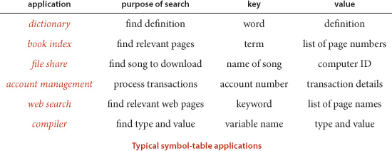
API
The symbol table is a prototypical abstract data type (see CHAPTER 1): it represents a well-defined set of values and operations on those values, enabling us to develop clients and implementations separately. As usual, we precisely define the operations by specifying an applications programming interface (API) that provides the contract between client and implementation:
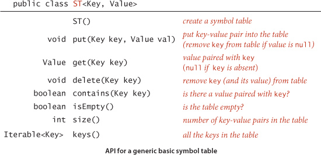
Before examining client code, we consider several design choices for our implementations to make our code consistent, compact, and useful.
Generics
As we did with sorting, we will consider the methods without specifying the types of the items being processed, using generics. For symbol tables, we emphasize the separate roles played by keys and values in search by specifying the key and value types explicitly instead of viewing keys as implicit in items as we did for priority queues in SECTION 2.4. After we have considered some of the characteristics of this basic API (for example, note that there is no mention of order among the keys), we will consider an extension for the typical case when keys are Comparable, which enables numerous additional methods.
Duplicate keys
We adopt the following conventions in all of our implementations:
• Only one value is associated with each key (no duplicate keys in a table).
• When a client puts a key-value pair into a table already containing that key (and an associated value), the new value replaces the old one.
These conventions define the associative array abstraction, where you can think of a symbol table as being just like an array, where keys are indices and values are array entries. In a conventional array, keys are integer indices that we use to quickly access array values; in an associative array (symbol table), keys are of arbitrary type, but we can still use them to quickly access values. Some programming languages (not Java) provide special support that allows programmers to use code such as st[key] for st.get(key) and st[key] = val for st.put(key, val) where key and val are objects of arbitrary type.
Null keys
Keys must not be null. As with many mechanisms in Java, use of a null key results in an exception at runtime (see the third Q&A on page 387).
Null values
We also adopt the convention that no key can be associated with the value null. This convention is directly tied to our specification in the API that get() should return null for keys not in the table, effectively associating the value null with every key not in the table. This convention has two (intended) consequences: First, we can test whether or not the symbol table defines a value associated with a given key by testing whether get() returns null. Second, we can use the operation of calling put() with null as its second (value) argument to implement deletion, as described in the next paragraph.
Deletion
Deletion in symbol tables generally involves one of two strategies: lazy deletion, where we associate keys in the table with null, then perhaps remove all such keys at some later time; and eager deletion, where we remove the key from the table immediately. As just discussed, the code put(key, null) is an easy (lazy) implementation of delete(key). When we give an (eager) implementation of delete(), it is intended to replace this default. In our symbol-table implementations that do not use the default delete(), the put() implementations on the booksite begin with the defensive code
if (val == null) { delete(key); return; }
to ensure that no key in the table is associated with null. For economy, we do not include this code in the book (and we do not call put() with a null value in client code).
Shorthand methods
For clarity in client code, we include the methods contains() and isEmpty() in the API, with the default one-line implementations shown here. For economy, we do not repeat this code, but we assume it to be present in all implementations of the symbol-table API and use these methods freely in client code.
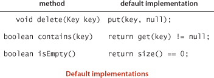
Iteration
To enable clients to process all the keys and values in the table, we might add the phrase implements Iterable<Key> to the first line of the API to specify that every implementation must implement an iterator() method that returns an iterator having appropriate implementations of hasNext() and next(), as described for stacks and queues in SECTION 1.3. For symbol tables, we adopt a simpler alternative approach, where we specify a keys() method that returns an Iterable<Key> object for clients to use to iterate through the keys. Our reason for doing so is to maintain consistency with methods that we will define for ordered symbol tables that allow clients to iterate through a specified subset of keys in the table.
Key equality
Determining whether or not a given key is in a symbol table is based on the concept of object equality, which we discussed at length in SECTION 1.2 (see page 102). Java’s convention that all objects inherit an equals() method and its implementation of equals() both for standard types such as Integer, Double, and String and for more complicated types such as File and URL is a head start—when using these types of data, you can just use the built-in implementation. For example, if x and y are String values, then x.equals(y) is true if and only if x and y have the same length and are identical in each character position. For such client-defined keys, you need to override equals(), as discussed in SECTION 1.2. You can use our implementation of equals() for Date (page 103) as a template to develop equals() for a type of your own. As discussed for priority queues on page 320, a best practice is to make Key types immutable, because consistency cannot otherwise be guaranteed.
Ordered symbol tables
In typical applications, keys are Comparable objects, so the option exists of using the code a.compareTo(b) to compare two keys a and b. Several symbol-table implementations take advantage of order among the keys that is implied by Comparable to provide efficient implementations of the put() and get() operations. More important, in such implementations, we can think of the symbol table as keeping the keys in order and consider a significantly expanded API that defines numerous natural and useful operations involving relative key order. For example, suppose that your keys are times of the day. You might be interested in knowing the earliest or the latest time, the set of keys that fall between two given times, and so forth. In most cases, such operations are not difficult to implement with the same data structures and methods underlying the put() and get() implementations. Specifically, for applications where keys are Comparable, we implement in this chapter the following API:
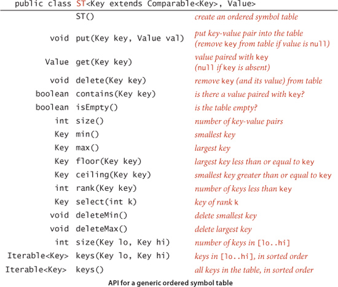
Your signal that one of our programs is implementing this API is the presence of the Key extends Comparable<Key> generic type variable in the class declaration, which specifies that the code depends upon the keys being Comparable and implements the richer set of operations. Together, these operations define for client programs an ordered symbol table.
Minimum and maximum
Perhaps the most natural queries for a set of ordered keys are to ask for the smallest and largest keys. We have already encountered these operations, in our discussion of priority queues in SECTION 2.4. In ordered symbol tables, we also have methods to delete the maximum and minimum keys (and their associated values). With this capability, the symbol table can operate like the IndexMinPQ() class that we discussed in SECTION 2.4. The primary differences are that equal keys are allowed in priority queues but not in symbol tables and that ordered symbol tables support a much larger set of operations.
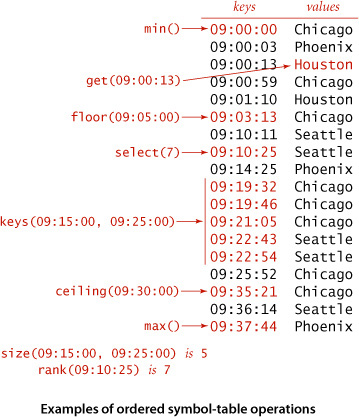
Floor and ceiling
Given a key, it is often useful to be able to perform the floor operation (find the largest key that is less than or equal to the given key) and the ceiling operation (find the smallest key that is greater than or equal to the given key). The nomenclature comes from functions defined on real numbers (the floor of a real number x is the largest integer that is smaller than or equal to x and the ceiling of a real number x is the smallest integer that is greater than or equal to x).
Rank and selection
The basic operations for determining where a new key fits in the order are the rank operation (find the number of keys less than a given key) and the select operation (find the key with a given rank). To test your understanding of their meaning, confirm for yourself that both i == rank(select(i)) for all i between 0 and size()-1 and all keys in the table satisfy key == select(rank(key)). We have already encountered the need for these operations, in our discussion of sort applications in SECTION 2.5. For symbol tables, our challenge is to perform these operations quickly, intermixed with insertions, deletions, and searches.
Range queries
How many keys fall within a given range (between two given keys)? Which keys fall in a given range? The two-argument size() and keys() methods that answer these questions are useful in many applications, particularly in large databases. The capability to handle such queries is one prime reason that ordered symbol tables are so widely used in practice.
Exceptional cases
When a method is to return a key and there is no key fitting the description in the table, our convention is to throw an exception (an alternate approach, which is also reasonable, would be to return null in such cases). For example, min(), max(), deleteMin(), deleteMax(), floor(), and ceiling() all throw exceptions if the table is empty, as does select(k) if k is less than 0 or not less than size().
Shorthand methods
As we have already seen with isEmpty() and contains() in our basic API, we keep some redundant methods in the API for clarity in client code. For economy in the text, we assume that the following default implementations are included in any implementation of the ordered symbol-table API unless otherwise specified:
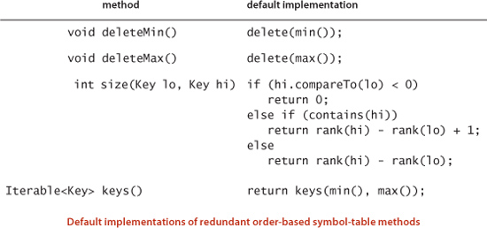
Key equality (revisited)
The best practice in Java is to make compareTo() consistent with equals() in all Comparable types. That is, for every pair of values a and b in any given Comparable type, it should be the case that (a.compareTo(b) == 0) and a.equals(b) have the same value. To avoid any potential ambiguities, we avoid the use of equals() in ordered symbol-table implementations. Instead, we use compareTo() exclusively to compare keys: we take the boolean expression a.compareTo(b) == 0 to mean “Are a and b equal?” Typically, such a test marks the successful end of a search for a in the symbol table (by finding b). As you saw with sorting algorithms, Java provides standard implementations of compareTo() for many commonly used types of keys, and it is not difficult to develop a compareTo() implementation for your own data types (see SECTION 2.5).
Cost model
Whether we use equals() (for symbol tables where keys are not Comparable) or compareTo() (for ordered symbol tables with Comparable keys), we use the term compare to refer to the operation of comparing a symbol-table entry against a search key. In most symbol-table implementations, this operation is in the inner loop. In the few cases where that is not the case, we also count array accesses.
SYMBOL-TABLE IMPLEMENTATIONS are generally characterized by their underlying data structures and their implementations of get() and put(). We do not always provide implementations of all of the other methods in the text because many of them make good exercises to test your understanding of the underlying data structures. To distinguish implementations, we add a descriptive prefix to ST that refers to the implementation in the class name of symbol-table implementations. In clients, we use ST to call on a reference implementation unless we wish to refer to a specific implementation. You will gradually develop a better feeling for the rationale behind the methods in the APIs in the context of the numerous clients and symbol-table implementations that we present and discuss throughout this chapter and throughout the rest of this book. We also discuss alternatives to the various design choices that we have described here in the Q&A and exercises.
Sample clients
While we defer detailed consideration of applications to SECTION 3.5, it is worthwhile to consider some client code before considering implementations. Accordingly, we now consider two clients: a test client that we use to trace algorithm behavior on small inputs and a performance client that we use to motivate the development of efficient implementations.
Test client
For tracing our algorithms on small inputs we assume that all of our implementations use the test client below, which takes a sequence of strings from standard input, builds a symbol table that associates the value i with the ith string in the input, and then prints the table. In the traces in the text, we assume that the input is a sequence of single-character strings. Most often, we use the string "S E A R C H E X A M P L E". By our conventions, this client associates the key S with the value 0, the key R with the value 3, and so forth. But E is associated with the value 12 (not 1 or 6) and A with the value 8 (not 2) because our associative-array convention implies that each key is associated with the value used in the most recent call to put(). For basic (unordered) implementations, the order of the keys in the output of this test client is not specified (it depends on characteristics of the implementation); for an ordered symbol table the test client prints the keys in sorted order. This client is an example of an indexing client, a special case of a fundamental symbol-table application that we discuss in SECTION 3.5.
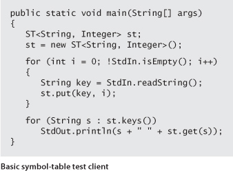
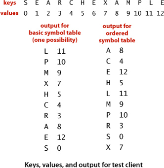
Performance client
FrequencyCounter (on the next page) is a symbol-table client that finds the number of occurrences of each string (having at least as many characters as a given threshold length) in a sequence of strings from standard input, then iterates through the keys to find the one that occurs the most frequently. This client is an example of a dictionary client, an application that we discuss in more detail in SECTION 3.5. This client answers a simple question: Which word (no shorter than a given length) occurs most frequently in a given text? Throughout this chapter, we measure performance of this client with three reference inputs: the first five lines of C. Dickens’s Tale of Two Cities (tinyTale.txt), the full text of the book (tale.txt), and a popular database of 1 million sentences taken at random from the web that is known as the Leipzig Corpora Collection (leipzig1M.txt). For example, here is the content of tinyTale.txt:
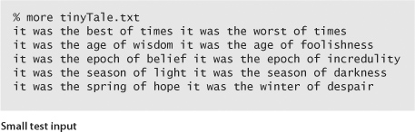
This text has 60 words taken from 20 distinct words, four of which occur ten times (the highest frequency). Given this input, FrequencyCounter will print out any of it, was, the, or of (the one chosen may vary, depending upon characteristics of the symbol-table implementation), followed by the frequency, 10.
To study performance for the larger inputs, it is clear that two measures are of interest: Each word in the input is used as a search key once, so the total number of words in the text is certainly relevant. Second, each distinct word in the input is put into the symbol table (and the total number of distinct words in the input gives the size of the table after all keys have been inserted), so the total number of distinct words in the input stream is certainly relevant. We need to know both of these quantities in order to estimate the running time of FrequencyCounter (for a start, see EXERCISE 3.1.6). We defer details until we consider some algorithms, but you should have in mind a general idea of the needs of typical applications like this one. For example, running FrequencyCounter on leipzig1M.txt for words of length 8 or more involves millions of searches in a table with hundreds of thousands of keys and values. A server on the web might need to handle billions of transactions on tables with millions of keys and values.
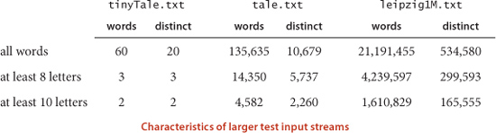
THE BASIC QUESTION THAT THIS CLIENT and these examples raise is the following: Can we develop a symbol-table implementation that can handle a huge number of get() operations on a large table, which itself was built with a large number of intermixed get() and put() operations? If you are only doing a few searches, any implementation will do, but you cannot make use of a client like FrequencyCounter for large problems without a good symbol-table implementation. FrequencyCounter is surrogate for a very common situation. Specifically, it has the following characteristics, which are shared by many other symbol-table clients:
• Search and insert operations are intermixed.
• The number of distinct keys is not small.
• Substantially more searches than inserts are likely.
• Search and insert patterns, though unpredictable, are not random.
Our goal is to develop symbol-table implementations that make it feasible to use such clients to solve typical practical problems.
Next, we consider two elementary implementations and their performance for FrequencyCounter. Then, in the next several sections, you will learn classic implementations that can achieve excellent performance for such clients, even for huge input streams and tables.
Sequential search in an unordered linked list
One straightforward option for the underlying data structure for a symbol table is a linked list of nodes that contain keys and values, as in the code on the facing page. To implement get(), we scan through the list, using equals() to compare the search key with the key in each node in the list. If we find the match, we return the associated value; if not, we return null. To implement put(), we also scan through the list, using equals() to compare the client key with the key in each node in the list. If we find the match, we update the value associated with that key to be the value given in the second argument; if not, we create a new node with the given key and value and insert it at the beginning of the list. This method is known as sequential search: we search by considering the keys in the table one after another, using equals() to test for a match with our search key.
ALGORITHM 3.1 (SequentialSearchST) is an implementation of our basic symbol-table API that uses standard list-processing mechanisms, which we have used for elementary data structures in CHAPTER 1. We have left the implementations of size(), keys(), and eager delete() for exercises. You are encouraged to work these exercises to cement your understanding of the linked-list data structure and the basic symbol-table API.
Can this linked-list-based implementation handle applications that need large tables, such as our sample clients? As we have noted, analyzing symbol-table algorithms is more complicated than analyzing sorting algorithms because of the difficulty of characterizing the sequence of operations that might be invoked by a given client. As noted for FrequencyCounter, the most common situation is that, while search and insert patterns are unpredictable, they certainly are not random. For this reason, we pay careful attention to worst-case performance. For economy, we use the term search hit to refer to a successful search and search miss to refer to an unsuccessful search.
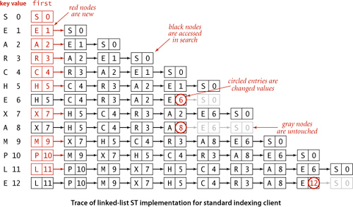
It is true that searches for keys that are in the table need not take linear time. One useful measure is to compute the total cost of searching for all of the keys in the table, divided by N. This quantity is precisely the expected number of compares required for a search under the condition that searches for each key in the table are equally likely. We refer to such a search as a random search hit. Though client search patterns are not likely to be random, they often are well-described by this model. It is easy to show that the average number of compares for a random search hit is ~ N/2: the get() method in ALGORITHM 3.1 uses 1 compare to find the first key, 2 compares to find the second key, and so forth, for an average cost of (1 + 2 + ... + N)/N = (N + 1)/2 ~ N/2.
This analysis strongly indicates that a linked-list implementation with sequential search is too slow for it to be used to solve huge problems such as our reference inputs with clients like FrequencyCounter. The total number of compares is proportional to the product of the number of searches and the number of inserts, which is more than 109 for Tale of Two Cities and more than 1014 for the Leipzig Corpora.
As usual, to validate analytic results, we need to run experiments. As an example, we study the operation of FrequencyCounter with command-line argument 8 for tale.txt, which involves 14,350 put() operations (recall that every word in the input leads to a put(), to update its frequency, and we ignore the cost of easily avoided calls to contains()). The symbol table grows to 5,737 keys, so about one-third of the operations increase the size of the table; the rest are searches. To visualize the performance, we use VisualAccumulator (see page 95) to plot two points corresponding to each put() operation as follows: for the ith put() operation we plot a gray point with x coordinate i and y coordinate the number of key compares it uses and a red point with x coordinate i and y coordinate the cumulative average number of key compares used for the first i put() operations. As with any scientific data, there is a great deal of information in this data for us to investigate (this plot has 14,350 gray points and 14,350 red points). In this context, our primary interest is that the plot validates our hypothesis that about half the list is accessed for the average put() operation. The actual total is slightly lower than half, but this fact (and the precise shape of the curves) is perhaps best explained by characteristics of the application, not our algorithms (see EXERCISE 3.1.36).
While detailed characterization of performance for particular clients can be complicated, specific hypotheses are easy to formulate and to test for FrequencyCount with our reference inputs or with randomly ordered inputs, using a client like the DoublingTest client that we introduced in CHAPTER 1. We will reserve such testing for exercises and for the more sophisticated implementations that follow. If you are not already convinced that we need faster implementations, be sure to work these exercises (or just run FrequencyCounter with SequentialSearchST on leipzig1M.txt!).
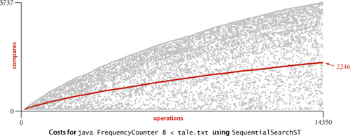
Binary search in an ordered array
Next, we consider a full implementation of our ordered symbol-table API. The underlying data structure is a pair of parallel arrays, one for the keys and one for the values. ALGORITHM 3.2 (BinarySearchST) on the facing page keeps Comparable keys in order in the array, then uses array indexing to enable fast implementation of get() and other operations.
The heart of the implementation is the rank() method, which returns the number of keys smaller than a given key. For get(), the rank tells us precisely where the key is to be found if it is in the table (and, if it is not there, that it is not in the table).
For put(), the rank tells us precisely where to update the value when the key is in the table, and precisely where to put the key when the key is not in the table. We move all larger keys over one position to make room (working from back to front) and insert the given key and value into the proper positions in their respective arrays. Again, studying BinarySearchST in conjunction with a trace of our test client is an instructive introduction to this data structure.
This code maintains parallel arrays of keys and values (see EXERCISE 3.1.12 for an alternative). As with our implementations of generic stacks and queues in CHAPTER 1, this code carries the inconvenience of having to create a Key array of type Comparable and a Value array of type Object, and to cast them back to Key[] and Value[] in the constructor. As usual, we can use array resizing so that clients do not have to be concerned with the size of the array (noting, as you shall see, that this method is too slow to use with large arrays).
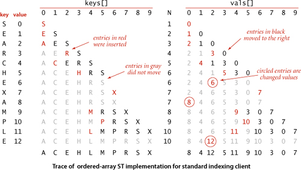
Binary search
The reason that we keep keys in an ordered array is so that we can use array indexing to dramatically reduce the number of compares required for each search, using the classic and venerable binary search algorithm that we used as an example in CHAPTER 1. We maintain indices into the sorted key array that delimit the subarray that might contain the search key. To search, we compare the search key against the key in the middle of the subarray. If the search key is less than the key in the middle, we search in the left half of the subarray; if the search key is greater than the key in the middle, we search in the right half of the subarray; otherwise the key in the middle is equal to the search key. The rank() code on the facing page uses binary search to complete the symbol-table implementation just discussed. This implementation is worthy of careful study. To study it, we start with the equivalent recursive code at left. A call to rank(key, 0, N-1) does the same sequence of compares as a call to the nonrecursive implementation in ALGORITHM 3.2, but this alternate version better exposes the structure of the algorithm, as discussed in SECTION 1.1. This recursive rank() preserves the following properties:
• If key is in the table, rank() returns its index in the table, which is the same as the number of keys in the table that are smaller than key.
• If key is not in the table, rank() also returns the number of keys in the table that are smaller than key.
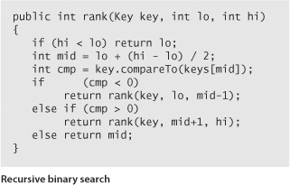
Taking the time to convince yourself that the nonrecursive rank() in ALGORITHM 3.2 operates as expected (either by proving that it is equivalent to the recursive version or by proving directly that the loop always terminates with the value of lo precisely equal to the number of keys in the table that are smaller than key) is a worthwhile exercise for any programmer. (Hint: Note that lo starts at 0 and never decreases.)
Other operations
Since the keys are kept in an ordered array, most of the order-based operations are compact and straightforward, as you can see from the code on page 382. For example, a call to select(k) just returns keys[k]. We have left delete() and floor() as exercises. You are encouraged to study the implementation of ceiling() and the two-argument keys() and to work these exercises to cement your understanding of the ordered symbol-table API and this implementation.
Analysis of binary search
The recursive implementation of rank() also leads to an immediate argument that binary search guarantees fast search, because it corresponds to a recurrence relation that describes an upper bound on the number of compares.
The implementation just given for ceiling() is based on a single call to rank(), and the default two-argument size() implementation calls rank() twice, so this proof also establishes that these operations (and floor()) are supported in guaranteed logarithmic time (min(), max(), and select() are constant-time operations).
Despite its guaranteed logarithmic search, BinarySearchST still does not enable us to use clients like FrequencyCounter to solve huge problems, because the put() method is too slow. Binary search reduces the number of compares, but not the running time, because its use does not change the fact that the number of array accesses required to build a symbol table in an ordered array is quadratic in the size of the array when keys are randomly ordered (and in typical practical situations where the keys, while not random, are well-described by this model).
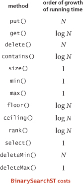
For Tale of Two Cities, with over 104 distinct keys, the cost to build the table is nearly 108 array accesses, and for the Leipzig project, with over 106 distinct keys, the cost to build the table is over 1011 array accesses. While not quite prohibitive on modern computers, these costs are extremely (and unnecessarily) high.
Returning to the cost of the put() operations for FrequencyCounter for words of length 8 or more, we see a reduction in the average cost from 2,246 compares (plus array accesses) per operation for SequentialSearchST to 484 for BinarySearchST. As before, this cost is even better than would be predicted by analysis, and the extra improvement is likely again explained by properties of the application (see EXERCISE 3.1.36). This improvement is impressive, but we can do much better, as you shall see.
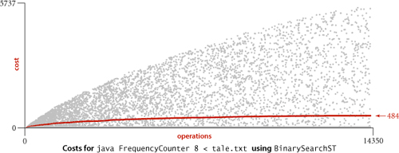
Preview
Binary search is typically far better than sequential search and is the method of choice in numerous practical applications. For a static table (with no insert operations allowed), it is worthwhile to initialize and sort the table, as in the version of binary search that we considered in CHAPTER 1 (see page 99). Even when the bulk of the key-value pairs is known before the bulk of the searches (a common situation in applications), it is worthwhile to add to BinarySearchST a constructor that initializes and sorts the table (see EXERCISE 3.1.12). Still, binary search is infeasible for use in many other applications. For example, it fails for our Leipzig Corpora application because searches and inserts are intermixed and the table size is too large. As we have emphasized, typical modern search clients require symbol tables that can support fast implementations of both search and insert. That is, we need to be able to build huge tables where we can insert (and perhaps remove) key-value pairs in unpredictable patterns, intermixed with searches.
The table below summarizes performance characteristics for the elementary symbol-table implementations considered in this section. The table entries give the leading term of the cost (number of array accesses for binary search, number of compares for the others), which implies the order of growth of the running time.
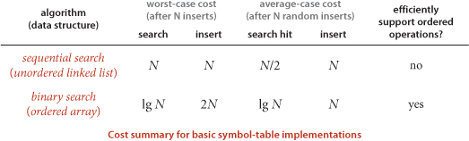
The central question is whether we can devise algorithms and data structures that achieve logarithmic performance for both search and insert. The answer is a resounding yes! Providing that answer is the main thrust of this chapter. Along with the fast sort capability discussed in CHAPTER 2, fast symbol-table search/insert is one of the most important contributions of algorithmics and one of the most important steps toward the development of the rich computational infrastructure that we now enjoy.
How can we achieve this goal? To support efficient insertion, it seems that we need a linked structure. But a singly linked list forecloses the use of binary search, because the efficiency of binary search depends on our ability to get to the middle of any subarray quickly via indexing (and the only way to get to the middle of a singly linked list is to follow links). To combine the efficiency of binary search with the flexibility of linked structures, we need more complicated data structures. That combination is provided both by binary search trees, the subject of the next two sections, and by hash tables, the subject of SECTION 3.4.
We consider six symbol-table implementations in this chapter, so a brief preview is in order. The table below is a list of the data structures, along with the primary reasons in favor of and against using each for an application. They appear in the order in which we consider them.
We will get into more detail on properties of the algorithms and implementations as we discuss them, but the brief characterizations in this table will help you keep them in a broader context as you learn them. The bottom line is that we have several fast symbol-table implementations that can be and are used to great effect in countless applications.
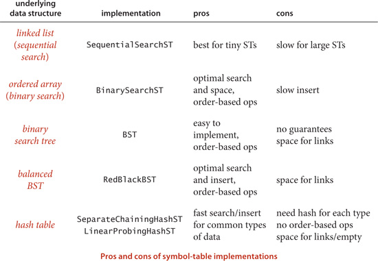
Q&A
Q. Why not use an Item type that implements Comparable for symbol tables, in the same way as we did for priority queues in SECTION 2.4, instead of having separate keys and values?
A. That is also a reasonable option. These two approaches illustrate two different ways to associate information with keys—we can do so implicitly by building a data type that includes the key or explicitly by separating keys from values. For symbol tables, we have chosen to highlight the associative array abstraction. Note also that a client specifies just a key in search, not a key-value aggregation.
Q. Why bother with equals()? Why not just use compareTo() throughout?
A. Not all data types lead to key values that are easy to compare, even though having a symbol table still might make sense. To take an extreme example, you may wish to use pictures or songs as keys. There is no natural way to compare them, but we can certainly test equality (with some work).
Q. Why not allow keys to take the value null?
A. We assume that Key is an Object because we use it to invoke compareTo() or equals(). But a call like a.compareTo(b) would cause a null pointer exception if a is null. By ruling out this possibility, we allow for simpler client code.
Q. Why not use a method like the less() method that we used for sorting?
A. Equality plays a special role in symbol tables, so we also would need a method for testing equality. To avoid proliferation of methods that have essentially the same function, we adopt the built-in Java methods equals() and compareTo().
Q. Why not declare key[] as Object[] (instead of Comparable[]) in BinarySearchST before casting, in the same way that val[] is declared as Object?
A. Good question. If you do so, you will get a ClassCastException because keys need to be Comparable (to ensure that entries in key[] have a compareTo() method). Thus, declaring key[] as Comparable[] is required. Delving into the details of programming-language design to explain the reasons would take us somewhat off topic. We use precisely this idiom (and nothing more complicated) in any code that uses Comparable generics and arrays throughout this book.
Q. What if we need to associate multiple values with the same key? For example, if we use Date as a key in an application, wouldn’t we have to process equal keys?
A. Maybe, maybe not. For example, you can’t have two trains arrive at the station on the same track at the same time (but they could arrive on different tracks at the same time). There are two ways to handle the situation: use some other information to disambiguate or make the value a Queue of values having the same key. We consider applications in detail in SECTION 3.5.
Q. Presorting the table as discussed on page 385 seems like a good idea. Why relegate that to an exercise (see EXERCISE 3.1.12)?
A. Indeed, this may be the method of choice in some applications. But adding a slow insert method to a data structure designed for fast search “for convenience” is a performance trap, because an unsuspecting client might intermix searches and inserts in a huge table and experience quadratic performance. Such traps are all too common, so that “buyer beware” is certainly appropriate when using software developed by others, particularly when interfaces are too wide. This problem becomes acute when a large number of methods are included “for convenience” leaving performance traps throughout, while a client might expect efficient implementations of all methods. Java’s ArrayList class is an example (see EXERCISE 3.5.27).
Exercises
3.1.1 Write a client that creates a symbol table mapping letter grades to numerical scores, as in the table below, then reads from standard input a list of letter grades and computes and prints the GPA (the average of the numbers corresponding to the grades).
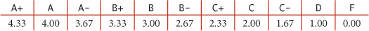
3.1.2 Develop a symbol-table implementation ArrayST that uses an (unordered) array as the underlying data structure to implement our basic symbol-table API.
3.1.3 Develop a symbol-table implementation OrderedSequentialSearchST that uses an ordered linked list as the underlying data structure to implement our ordered symbol-table API.
3.1.4 Develop Time and Event ADTs that allow processing of data as in the example illustrated on page 367.
3.1.5 Implement size(), delete(), and keys() for SequentialSearchST.
3.1.6 Give the number of calls to put() and get() issued by FrequencyCounter, as a function of the number W of words and the number D of distinct words in the input.
3.1.7 What is the average number of distinct keys that FrequencyCounter will find among N random nonnegative integers less than 1,000, for N=10, 102, 103, 104, 105, and 106?
3.1.8 What is the most frequently used word of ten letters or more in Tale of Two Cities?
3.1.9 Add code to FrequencyCounter to keep track of the last call to put(). Print the last word inserted and the number of words that were processed in the input stream prior to this insertion. Run your program for tale.txt with length cutoffs 1, 8, and 10.
3.1.10 Give a trace of the process of inserting the keys E A S Y Q U E S T I O N into an initially empty table using SequentialSearchST. How many compares are involved?
3.1.11 Give a trace of the process of inserting the keys E A S Y Q U E S T I O N into an initially empty table using BinarySearchST. How many compares are involved?
3.1.12 Modify BinarySearchST to maintain one array of Item objects that contain keys and values, rather than two parallel arrays. Add a constructor that takes an array of Item values as argument and uses mergesort to sort the array.
3.1.13 Which of the symbol-table implementations in this section would you use for an application that does 103 put() operations and 106 get() operations, randomly intermixed? Justify your answer.
3.1.14 Which of the symbol-table implementations in this section would you use for an application that does 106 put() operations and 103 get() operations, randomly intermixed? Justify your answer.
3.1.15 Assume that searches are 1,000 times more frequent than insertions for a BinarySearchST client. Estimate the percentage of the total time that is devoted to insertions, when the number of searches is 103, 106, and 109.
3.1.16 Implement the delete() method for BinarySearchST.
3.1.17 Implement the floor() method for BinarySearchST.
3.1.18 Prove that the rank() method in BinarySearchST is correct.
3.1.19 Modify FrequencyCounter to print all of the values having the highest frequency of occurrence, not just one of them. Hint: Use a Queue.
3.1.20 Complete the proof of PROPOSITION B (show that it holds for all values of N). Hint: Start by showing that C(N) is monotonic: C(N) ≤ C(N+1) for all N > 0.
Creative Problems
3.1.21 Memory usage. Compare the memory usage of BinarySearchST with that of SequentialSearchST for N key-value pairs, under the assumptions described in SECTION 1.4. Do not count the memory for the keys and values themselves, but do count references to them. For BinarySearchST, assume that array resizing is used, so that the array is between 25 percent and 100 percent full.
3.1.22 Self-organizing search. A self-organizing search algorithm is one that rearranges items to make those that are accessed frequently likely to be found early in the search. Modify your search implementation for EXERCISE 3.1.2 to perform the following action on every search hit: move the key-value pair found to the beginning of the list, moving all pairs between the beginning of the list and the vacated position to the right one position. This procedure is called the move-to-front heuristic.
3.1.23 Analysis of binary search. Prove that the maximum number of compares used for a binary search in a table of size N is precisely the number of bits in the binary representation of N, because the operation of shifting 1 bit to the right converts the binary representation of N into the binary representation of  N/2
N/2 .
.
3.1.24 Interpolation search. Suppose that arithmetic operations are allowed on keys (for example, they may be Double or Integer values). Write a version of binary search that mimics the process of looking near the beginning of a dictionary when the word begins with a letter near the beginning of the alphabet. Specifically, if kx is the key value sought, klo is the key value of the first key in the table, and khi is the key value of the last key in the table, look first (kx − klo)/(khi − klo)-way through the table, not half-way. Test your implementation against BinarySearchST for FrequencyCounter using SearchCompare.
3.1.25 Software caching. Since the default implementation of contains() calls get(), the inner loop of FrequencyCounter
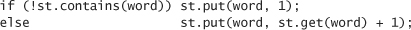
leads to two or three searches for the same key. To enable clear client code like this without sacrificing efficiency, we can use a technique known as software caching, where we save the location of the most recently accessed key in an instance variable. Modify SequentialSearchST and BinarySearchST to take advantage of this idea.
3.1.26 Frequency count from a dictionary. Modify FrequencyCounter to take the name of a dictionary file as its argument, count frequencies of the words from standard input that are also in that file, and print two tables of the words with their frequencies, one sorted by frequency, the other sorted in the order found in the dictionary file.
3.1.27 Small tables. Suppose that a BinarySearchST client has S search operations and N distinct keys. Give the order of growth of S such that the cost of building the table is the same as the cost of all the searches.
3.1.28 Ordered insertions. Modify BinarySearchST so that inserting a key that is larger than all keys in the table takes constant time (so that building a table by calling put() for keys that are in order takes linear time).
3.1.29 Test client. Write a test client for BinarySearchST that tests the implementations of min(), max(), floor(), ceiling(), select(), rank(), deleteMin(), deleteMax(), and keys() that are given in the text. Start with the standard indexing client given on page 370. Add code to take additional command-line arguments, as appropriate.
3.1.30 Certification. Add assert statements to BinarySearchST to check algorithm invariants and data structure integrity after every insertion and deletion. For example, every index i should always be equal to rank(select(i)) and the array should always be in order.
Experiments
3.1.31 Performance driver. Write a performance driver program that uses put() to fill a symbol table, then uses get() such that each key in the table is hit an average of ten times and there is about the same number of misses, doing so multiple times on random sequences of string keys of various lengths ranging from 2 to 50 characters; measures the time taken for each run; and prints out or plots the average running times.
3.1.32 Exercise driver. Write an exercise driver program that uses the methods in our ordered symbol-table API on difficult or pathological cases that might turn up in practical applications. Simple examples include key sequences that are already in order, key sequences in reverse order, key sequences where all keys are the same, and keys consisting of only two distinct values.
3.1.33 Driver for self-organizing search. Write a driver program for self-organizing search implementations (see EXERCISE 3.1.22) that uses get() to fill a symbol table with N keys, then does 10 N successful searches according to a predefined probability distribution. Use this driver to compare the running time of your implementation from EXERCISE 3.1.22 with BinarySearchST for N = 103, 104, 105, and 106 using the probability distribution where search hits the ith smallest key with probability 1/2i.
3.1.34 Zipf’s law. Do the previous exercise for the probability distribution where search hits the ith smallest key with probability 1/(iHN) where HN is a Harmonic number (see page 185). This distribution is called Zipf’s law. Compare the move-to-front heuristic with the optimal arrangement for the distributions in the previous exercise, which is to keep the keys in increasing order (decreasing order of their expected frequency).
3.1.35 Performance validation I. Run doubling tests that use the first N words of Tale of Two Cities for various values of N to test the hypothesis that the running time of FrequencyCounter is quadratic when it uses SequentialSearchST for its symbol table.
3.1.36 Performance validation II. Explain why the performance of BinarySearchST and SequentialSearchST for FrequencyCounter is even better than predicted by analysis.
3.1.37 Put/get ratio. Determine empirically the ratio of the amount of time that BinarySearchST spends on put() operations to the time that it spends on get() operations when FrequencyCounter is used to find the frequency of occurrence of values in 1 million random M-bit int values, for M = 10, 20, and 30. Answer the same question for tale.txt and compare the results.
3.1.38 Amortized cost plots. Develop instrumentation for FrequencyCounter, SequentialSearchST, and BinarySearchST so that you can produce plots like the ones in this section showing the cost of each put() operation during the computation.
3.1.39 Actual timings. Instrument FrequencyCounter to use Stopwatch and StdDraw to make a plot where the x-axis is the number of calls on get() or put() and the y-axis is the total running time, with a point plotted of the cumulative time after each call. Run your program for Tale of Two Cities using SequentialSearchST and again using BinarySearchST and discuss the results. Note: Sharp jumps in the curve may be explained by caching, which is beyond the scope of this question.
3.1.40 Crossover to binary search. Find the values of N for which binary search in a symbol table of size N becomes 10, 100, and 1,000 times faster than sequential search. Predict the values with analysis and verify them experimentally.
3.1.41 Crossover to interpolation search. Find the values of N for which interpolation search in a symbol table of size N becomes 1, 2, and 10 times faster than binary search, assuming the keys to be random 32-bit integers (see EXERCISE 3.1.24). Predict the values with analysis, and verify them experimentally.
3.2 Binary Search Trees
IN THIS SECTION, we will examine a symbol-table implementation that combines the flexibility of insertion in a linked list with the efficiency of search in an ordered array. Specifically, using two links per node (instead of the one link per node found in linked lists) leads to an efficient symbol-table implementation based on the binary search tree data structure, which qualifies as one of the most fundamental algorithms in computer science.
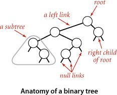
To begin, we define basic terminology. We are working with data structures made up of nodes that contain links that are either null or references to other nodes. In a binary tree, we have the restriction that every node is pointed to by just one other node, which is called its parent (except for one node, the root, which has no nodes pointing to it), and that each node has exactly two links, which are called its left and right links, that point to nodes called its left child and right child, respectively. Although links point to nodes, we can view each link as pointing to a binary tree, the tree whose root is the referenced node. Thus, we can define a binary tree as a either a null link or a node with a left link and a right link, each references to (disjoint) subtrees that are themselves binary trees. In a binary search tree, each node also has a key and a value, with an ordering restriction to support efficient search.
We draw BSTs with keys in the nodes and use terminology such as “A is the left child of E” that associates nodes with keys. Lines connecting the nodes represent links, and we give the value associated with a key in black, beside the nodes (suppressing the value as dictated by context). Each node’s links connect it to nodes below it on the page, except for null links, which are short segments at the bottom. As usual, our examples use the single-letter keys that are generated by our indexing test client.

Basic implementation
ALGORITHM 3.3 defines the BST data structure that we use throughout this section to implement the ordered symbol-table API. We begin by considering this classic data structure definition and the characteristic associated implementations of the get() (search) and put() (insert) methods.
Representation
We define a private nested class to define nodes in BSTs, just as we did for linked lists. Each node contains a key, a value, a left link, a right link, and a node count (when relevant, we include node counts in red above the node in our drawings). The left link points to a BST for items with smaller keys, and the right link points to a BST for items with larger keys. The instance variable N gives the node count in the subtree rooted at the node. This field facilitates the implementation of various ordered symbol-table operations, as you will see. The private size() method in ALGORITHM 3.3 is implemented to assign the value 0 to null links, so that we can maintain this field by making sure that the invariant
size(x) = size(x.left) + size(x.right) + 1
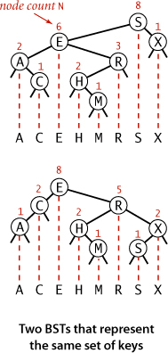
holds for every node x in the tree.
A BST represents a set of keys (and associated values), and there are many different BSTs that represent the same set. If we project the keys in a BST such that all keys in each node’s left subtree appear to the left of the key in the node and all keys in each node’s right subtree appear to the right of the key in the node, then we always get the keys in sorted order. We take advantage of the flexibility inherent in having many BSTs represent this sorted order to develop efficient algorithms for building and using BSTs.
Search
As usual, when we search for a key in a symbol table, we have one of two possible outcomes. If a node containing the key is in the table, we have a search hit, so we return the associated value. Otherwise, we have a search miss (and return null). A recursive algorithm to search for a key in a BST follows immediately from the recursive structure: if the tree is empty, we have a search miss; if the search key is equal to the key at the root, we have a search hit. Otherwise, we search (recursively) in the appropriate subtree, moving left if the search key is smaller, right if it is larger. The recursive get() method on page 399 implements this algorithm directly. It takes a node (root of a subtree) as first argument and a key as second argument, starting with the root of the tree and the search key. The code maintains the invariant that no parts of the tree other than the subtree rooted at the current node can have a node whose key is equal to the search key. Just as the size of the interval in binary search shrinks by about half on each iteration, the size of the subtree rooted at the current node when searching in a BST shrinks when we go down the tree (by about half, ideally, but at least by one). The procedure stops either when a node containing the search key is found (search hit) or when the current subtree becomes empty (search miss). Starting at the top, the search procedure at each node involves a recursive invocation for one of that node’s children, so the search defines a path through the tree. For a search hit, the path terminates at the node containing the key. For a search miss, the path terminates at a null link.
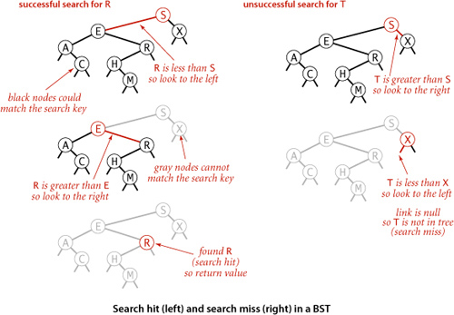
Insert
The search code in ALGORITHM 3.3 is almost as simple as binary search; that simplicity is an essential feature of BSTs. A more important essential feature of BSTs is that insert is not much more difficult to implement than search. Indeed, a search for a key not in the tree ends at a null link, and all that we need to do is replace that link with a new node containing the key (see the diagram on the next page). The recursive put() method in ALGORITHM 3.3 accomplishes this task using logic similar to that we used for the recursive search: if the tree is empty, we return a new node containing the key and value; if the search key is less than the key at the root, we set the left link to the result of inserting the key into the left subtree; otherwise, we set the right link to the result of inserting the key into the right subtree.
Recursion
It is worthwhile to take the time to understand the dynamics of these recursive implementations. You can think of the code before the recursive calls as happening on the way down the tree: it compares the given key against the key at each node and moves right or left accordingly. Then, think of the code after the recursive calls as happening on the way up the tree. For get() this amounts to a series of return statements, but for put(), it corresponds to resetting the link of each parent to its child on the search path and to incrementing the counts on the way up the path. In simple BSTs, the only new link is the one at the bottom, but resetting the links higher up on the path is as easy as the test to avoid setting them. Also, we just need to increment the node count on each node on the path, but we use more general code that sets each to one plus the sum of the counts in its subtrees. Later in this section and in the next section, we shall study more advanced algorithms that are naturally expressed with this same recursive scheme but that can change more links on the search paths and need the more general node-count-update code. Elementary BSTs are often implemented with nonrecursive code (see EXERCISE 3.2.12)—we use recursion in our implementations both to make it easy for you to convince yourself that the code is operating as described and to prepare the groundwork for more sophisticated algorithms.
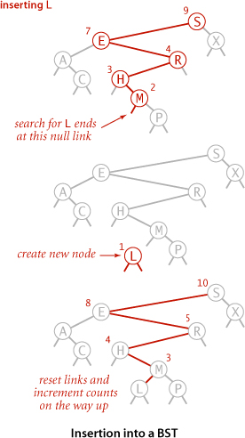
A CAREFUL STUDY of the trace for our standard indexing client that is shown on the next page will give you a feeling for the way in which binary search trees grow. New nodes are attached to null links at the bottom of the tree; the tree structure is not otherwise changed. For example, the root has the first key inserted, one of the children of the root has the second key inserted, and so forth. Because each node has two links, the tree tends to grow out, rather than just down. Moreover, only the keys on the path from the root to the sought or inserted key are examined, so the number of keys examined becomes a smaller and smaller fraction of the number of keys in the tree as the tree size increases.
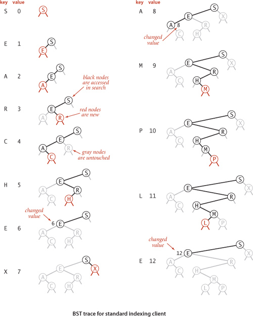
Analysis
The running times of algorithms on binary search trees depend on the shapes of the trees, which, in turn, depend on the order in which keys are inserted. In the best case, a tree with N nodes could be perfectly balanced, with ~ lg N nodes between the root and each null link. In the worst case there could be N nodes on the search path. The balance in typical trees turns out to be much closer to the best case than the worst case.
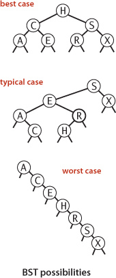
For many applications, the following simple model is reasonable: We assume that the keys are (uniformly) random, or, equivalently, that they are inserted in random order. Analysis of this model stems from the observation that BSTs are dual to quicksort. The node at the root of the tree corresponds to the first partitioning item in quicksort (no keys to the left are larger, and no keys to the right are smaller) and the subtrees are built recursively, corresponding to quicksort’s recursive subarray sorts. This observation leads us to the analysis of properties of the trees.
PROPOSITION C says that we should expect the BST search cost for random keys to be about 39 percent higher than that for binary search. PROPOSITION D says that the extra cost is well worthwhile, because the cost of inserting a new key is also expected to be logarithmic—flexibility not available with binary search in an ordered array, where the number of array accesses required for an insertion is typically linear. As with quicksort, the standard deviation of the number of compares is known to be low, so that these formulas become increasingly accurate as N increases.
Experiments
How well does our random-key model match what is found in typical symbol-table clients? As usual, this question has to be studied carefully for particular practical applications, because of the large potential variation in performance. Fortunately, for many clients, the model is quite good for BSTs.
For our example study of the cost of the put() operations for FrequencyCounter for words of length 8 or more, we see a reduction in the average cost from 484 array accesses or compares per operation for BinarySearchST to 13 for BST, again providing a quick validation of the logarithmic performance predicted by the theoretical model. More extensive experiments for larger inputs are illustrated in the table on the next page. On the basis of PROPOSITIONS C and D, it is reasonable to predict that this number should be about twice the natural logarithm of the table size, because the preponderance of operations are searches in a nearly full table. This prediction has at least the following inherent inaccuracies:
• Many operations are for smaller tables.
• The keys are not random.
• The table size may be too small for the approximation 2 ln N to be accurate.
Nevertheless, as you can see in the table, this prediction is accurate for our FrequencyCounter test cases to within a few compares. Actually, most of the difference can be explained by refining the mathematics in the approximation (see EXERCISE 3.2.35).
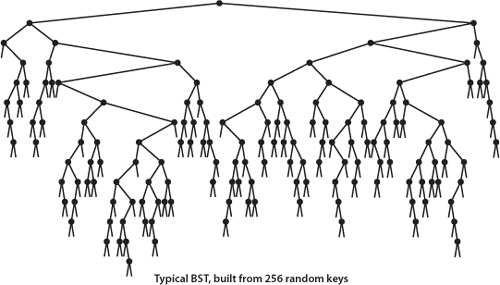
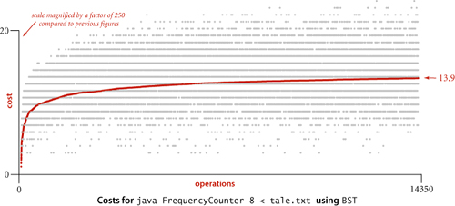
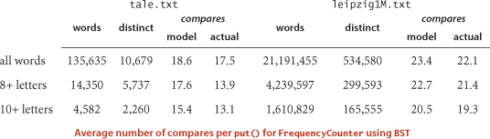
Order-based methods and deletion
An important reason that BSTs are widely used is that they allow us to keep the keys in order. As such, they can serve as the basis for implementing the numerous methods in our ordered symbol-table API (see page 366) that allow clients to access key-value pairs not just by providing the key, but also by relative key order. Next, we consider implementations of the various methods in our ordered symbol-table API.
Minimum and maximum
If the left link of the root is null, the smallest key in a BST is the key at the root; if the left link is not null, the smallest key in the BST is the smallest key in the subtree rooted at the node referenced by the left link. This statement is both a description of the recursive min() method on page 407 and an inductive proof that it finds the smallest key in the BST. The computation is equivalent to a simple iteration (move left until finding a null link), but we use recursion for consistency. We might have the recursive method return a Key instead of a Node, but we will later have a need to use this method to access the Node containing the minimum key. Finding the maximum key is similar, moving to the right instead of to the left.
Floor and ceiling
If a given key key is less than the key at the root of a BST, then the floor of key (the largest key in the BST less than or equal to key) must be in the left subtree. If key is greater than the key at the root, then the floor of key could be in the right subtree, but only if there is a key smaller than or equal to key in the right subtree; if not (or if key is equal to the key at the root), then the key at the root is the floor of key. Again, this description serves both as the basis for the recursive floor() method and for an inductive proof that it computes the desired result. Interchanging right and left (and less and greater) gives ceiling().
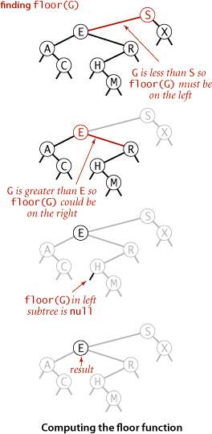
Selection
Selection in a BST works in a manner analogous to the partition-based method of selection in an array that we studied in SECTION 2.5. We maintain in BST nodes the variable N that counts the number of keys in the subtree rooted at that node precisely to support this operation. Suppose that we seek the key of rank k (the key such that precisely k other keys in the BST are smaller). If the number of keys t in the left subtree is larger than k, we look (recursively) for the key of rank k in the left subtree; if t is equal to k, we return the key at the root; and if t is smaller than k, we look (recursively) for the key of rank k − t − 1 in the right subtree. As usual, this description serves both as the basis for the recursive select() method on the facing page and for a proof by induction that it works as expected.
Rank
The inverse method rank() that returns the rank of a given key is similar: if the given key is equal to the key at the root, we return the number of keys t in the left subtree; if the given key is less than the key at the root, we return the rank of the key in the left subtree (recursively computed); and if the given key is larger than the key at the root, we return t plus one (to count the key at the root) plus the rank of the key in the right subtree (recursively computed).
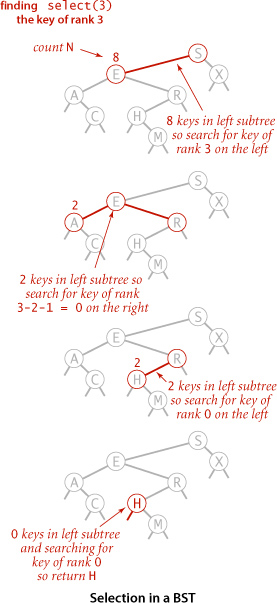
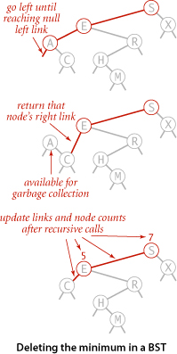
Delete the minimum/maximum
The most difficult BST operation to implement is the delete() method that removes a key-value pair from the symbol table. As a warmup, consider deleteMin() (remove the key-value pair with the smallest key). As with put() we write a recursive method that takes a link to a Node as argument and returns a link to a Node, so that we can reflect changes to the tree by assigning the result to the link used as argument. For deleteMin() we go left until finding a Node that has a null left link and then replace the link to that node by its right link (simply by returning the right link in the recursive method). The deleted node, with no link now pointing to it, is available for garbage collection. Our standard recursive setup accomplishes, after the deletion, the task of setting the appropriate link in the parent and updating the counts in all nodes in the path to the root. The symmetric method works for deleteMax().
Delete
We can proceed in a similar manner to delete any node that has one child (or no children), but what can we do to delete a node that has two children? We are left with two links, but have a place in the parent node for only one of them. An answer to this dilemma, first proposed by T. Hibbard in 1962, is to delete a node x by replacing it with its successor. Because x has a right child, its successor is the node with the smallest key in its right subtree. The replacement preserves order in the tree because there are no keys between x.key and the successor’s key. We can accomplish the task of replacing x by its successor in four (!) easy steps:
• Save a link to the node to be deleted in t.
• Set x to point to its successor min(t.right).
• Set the right link of x (which is supposed to point to the BST containing all the keys larger than x.key) to deleteMin(t.right), the link to the BST containing all the keys that are larger than x.key after the deletion.
• Set the left link of x (which was null) to t.left (all the keys that are less than both the deleted key and its successor).
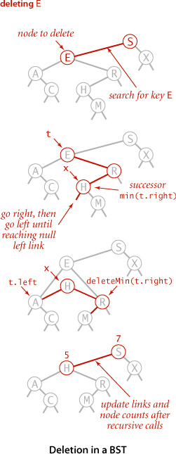
Our standard recursive setup accomplishes, after the recursive calls, the task of setting the appropriate link in the parent and decrementing the node counts in the nodes on the path to the root (again, we accomplish the task of updating the counts by setting the counts in each node on the search path to be one plus the sum of the counts in its children). While this method does the job, it has a flaw that might cause performance problems in some practical situations. The problem is that the choice of using the successor is arbitrary and not symmetric. Why not use the predecessor? In practice, it is worthwhile to choose at random between the predecessor and the successor. See EXERCISE 3.2.42 for details.
Range queries
To implement the keys() method that returns the keys in a given range, we begin with a basic recursive BST traversal method, known as inorder traversal. To illustrate the method, we consider the task of printing all the keys in a BST in order. To do so, print all the keys in the left subtree (which are less than the key at the root by definition of BSTs), then print the key at the root, then print all the keys in the right subtree (which are greater than the key at the root by definition of BSTs), as in the code at left. As usual, the description serves as an argument by induction that this code prints the keys in order. To implement the two-argument keys() method that returns to a client all the keys in a specified range, we modify this code to add each key that is in the range to a Queue, and to skip the recursive calls for subtrees that cannot contain keys in the range. As with BinarySearchST, the fact that we gather the keys in a Queue is hidden from the client. The intention is that clients should process all the keys in the range of interest using Java’s foreach construct rather than needing to know what data structure we use to implement Iterable<Key>.
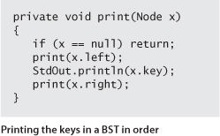
Analysis
How efficient are the order-based operations in BSTs? To study this question, we consider the tree height (the maximum depth of any node in the tree). Given a tree, its height determines the worst-case cost of all BST operations (except for range search which incurs additional cost proportional to the number of keys returned).
We expect the tree height (the worst-case cost) to be higher than the average internal path length that we defined on page 403 (which averages in the short paths as well), but how much higher? This question may seem to you to be similar to the questions answered by PROPOSITION C and PROPOSITION D, but it is far more difficult to answer, certainly beyond the scope of this book. The average height of a BST built from random keys was shown to be logarithmic by J. Robson in 1979, and L. Devroye later showed that the value approaches 2.99 lg N for large N. Thus, if the insertions in our application are well-described by the random-key model, we are well on the way toward our goal of developing a symbol-table implementation that supports all of these operations in logarithmic time. We can expect that no path in a tree built from random keys is longer than 3 lg N, but what can we expect if the keys are not random? In the next section, you will see why this question is moot in practice because of balanced BSTs, which guarantee that the BST height will be logarithmic regardless of the order in which keys are inserted.
IN SUMMARY, BSTs are not difficult to implement and can provide fast search and insert for practical applications of all kinds if the key insertions are well-approximated by the random-key model. For our examples (and for many practical applications) BSTs make the difference between being able to accomplish the task at hand and not being able to do so. Moreover, many programmers choose BSTs for symbol-table implementations because they also support fast rank, select, delete, and range query operations. Still, as we have emphasized, the bad worst-case performance of BSTs may not be tolerable in some situations. Good performance of the basic BST implementation is dependent on the keys being sufficiently similar to random keys that the tree is not likely to contain many long paths. With quicksort, we were able to randomize; with a symbol-table API, we do not have that freedom, because the client controls the mix of operations. Indeed, the worst-case behavior is not unlikely in practice—it arises when a client inserts keys in order or in reverse order, a sequence of operations that some client certainly might attempt in the absence of any explicit warnings to avoid doing so. This possibility is a primary reason to seek better algorithms and data structures, which we consider next.
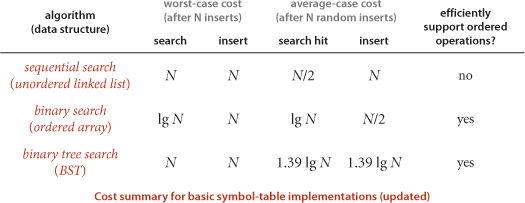
Q&A
Q. I’ve seen BSTs before, but not using recursion. What are the tradeoffs?
A. Generally, recursive implementations are a bit easier to verify for correctness; nonrecursive implementations are a bit more efficient. See EXERCISE 3.2.13 for an implementation of get(), the one case where you might notice the improved efficiency. If trees are unbalanced, the depth of the function-call stack could be a problem in a recursive implementation. Our primary reason for using recursion is to ease the transition to the balanced BST implementations of the next section, which definitely are easier to implement and debug with recursion.
Q. Maintaining the node count field in Node seems to require a lot of code. Is it really necessary? Why not maintain a single instance variable containing the number of nodes in the tree to implement the size() client method?
A. The rank() and select() methods need to have the size of the subtree rooted at each node. If you are not using these ordered operations, you can streamline the code by eliminating this field (see EXERCISE 3.2.12). Keeping the node count correct for all nodes is admittedly error-prone, but also a good check for debugging. You might also use a recursive method to implement size() for clients, but that would take linear time to count all the nodes and is a dangerous choice because you might experience poor performance in a client program, not realizing that such a simple operation is so expensive.
Exercises
3.2.1 Draw the BST that results when you insert the keys E A S Y Q U E S T I O N, in that order (associating the value i with the ith key, as per the convention in the text) into an initially empty tree. How many compares are needed to build the tree?
3.2.2 Inserting the keys in the order A X C S E R H into an initially empty BST gives a worst-case tree where every node has one null link, except one at the bottom, which has two null links. Give five other orderings of these keys that produce worst-case trees.
3.2.3 Give five orderings of the keys A X C S E R H that, when inserted into an initially empty BST, produce the best-case tree.
3.2.4 Suppose that a certain BST has keys that are integers between 1 and 10, and we search for 5. Which sequence below cannot be the sequence of keys examined?
a. 10, 9, 8, 7, 6, 5
b. 4, 10, 8, 7, 53
c. 1, 10, 2, 9, 3, 8, 4, 7, 6, 5
d. 2, 7, 3, 8, 4, 5
e. 1, 2, 10, 4, 8, 5
3.2.5 Suppose that we have an estimate ahead of time of how often search keys are to be accessed in a BST, and the freedom to insert them in any order that we desire. Should the keys be inserted into the tree in increasing order, decreasing order of likely frequency of access, or some other order? Explain your answer.
3.2.6 Add to BST a method height() that computes the height of the tree. Develop two implementations: a recursive method (which takes linear time and space proportional to the height), and a method like size() that adds a field to each node in the tree (and takes linear space and constant time per query).
3.2.7 Add to BST a recursive method avgCompares() that computes the average number of compares required by a random search hit in a given BST (the internal path length of the tree divided by its size, plus one). Develop two implementations: a recursive method (which takes linear time and space proportional to the height), and a method like size() that adds a field to each node in the tree (and takes linear space and constant time per query).
3.2.8 Write a static method optCompares() that takes an integer argument N and computes the number of compares required by a random search hit in an optimal (perfectly balanced) BST, where all the null links are on the same level if the number of links is a power of 2 or on one of two levels otherwise.
3.2.9 Draw all the different BST shapes that can result when N keys are inserted into an initially empty tree, for N = 2, 3, 4, 5, and 6.
3.2.10 Write a test client for BST that tests the implementations of min(), max(), floor(), ceiling(), select(), rank(), delete(), deleteMin(), deleteMax(), and keys() that are given in the text. Start with the standard indexing client given on page 370. Add code to take additional command-line arguments, as appropriate.
3.2.11 How many binary tree shapes of N nodes are there with height N? How many different ways are there to insert N distinct keys into an initially empty BST that result in a tree of height N? (See EXERCISE 3.2.2.)
3.2.12 Develop a BST implementation that omits rank() and select() and does not use a count field in Node.
3.2.13 Give nonrecursive implementations of get() and put() for BST.
Partial solution: Here is an implementation of get():
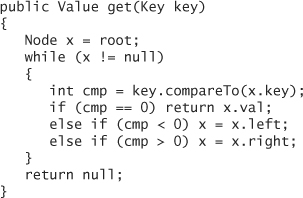
The implementation of put() is more complicated because of the need to save a pointer to the parent node to link in the new node at the bottom. Also, you need a separate pass to check whether the key is already in the table because of the need to update the counts. Since there are many more searches than inserts in performance-critical implementations, using this code for get() is justified; the corresponding change for put() might not be noticed.
3.2.14 Give nonrecursive implementations of min(), max(), floor(), ceiling(), rank(), and select().
3.2.15 Give the sequences of nodes examined when the methods in BST are used to compute each of the following quantities for the tree drawn at right.
a. floor("Q")
b. select(5)
c. ceiling("Q")
d. rank("J")
e. size("D", "T")
f. keys("D", "T")
3.2.16 Define the external path length of a tree to be the sum of the number of nodes on the paths from the root to all null links. Prove that the difference between the external and internal path lengths in any binary tree with N nodes is 2N (see PROPOSITION C).
3.2.17 Draw the sequence of BSTs that results when you delete the keys from the tree of EXERCISE 3.2.1, one by one, in the order they were inserted.
3.2.18 Draw the sequence of BSTs that results when you delete the keys from the tree of EXERCISE 3.2.1, one by one, in alphabetical order.
3.2.19 Draw the sequence of BSTs that results when you delete the keys from the tree of EXERCISE 3.2.1, one by one, by successively deleting the key at the root.
3.2.20 Prove that the running time of the two-argument keys() in a BST with N nodes is at most proportional to the tree height plus the number of keys in the range.
3.2.21 Add a BST method randomKey() that returns a random key from the symbol table in time proportional to the tree height, in the worst case.
3.2.22 Prove that if a node in a BST has two children, its successor has no left child and its predecessor has no right child.
3.2.23 Is delete() commutative? (Does deleting x, then y give the same result as deleting y, then x?)
3.2.24 Prove that no compare-based algorithm can build a BST using fewer than lg(N!) ~N lg N compares.
Creative Problems
3.2.25 Perfect balance. Write a program that inserts a set of keys into an initially empty BST such that the tree produced is equivalent to binary search, in the sense that the sequence of compares done in the search for any key in the BST is the same as the sequence of compares used by binary search for the same set of keys.
3.2.26 Exact probabilities. Find the probability that each of the trees in EXERCISE 3.2.9 is the result of inserting N random distinct elements into an initially empty tree.
3.2.27 Memory usage. Compare the memory usage of BST with the memory usage of BinarySearchST and SequentialSearchST for N key-value pairs, under the assumptions described in SECTION 1.4 (see EXERCISE 3.1.21). Do not count the memory for the keys and values themselves, but do count references to them. Then draw a diagram that depicts the precise memory usage of a BST with String keys and Integer values (such as the ones built by FrequencyCounter), and then estimate the memory usage (in bytes) for the BST built when FrequencyCounter uses BST for Tale of Two Cities.
3.2.28 Sofware caching. Modify BST to keep the most recently accessed Node in an instance variable so that it can be accessed in constant time if the next put() or get() uses the same key (see EXERCISE 3.1.25).
3.2.29 Tree traversal with constant extra memory. Design an algorithm that performs an inorder tree traversal of a BST using only a constant amount of extra memory. Hint: On the way down the tree, make the child point to the parent and reverse it on the way back up the tree.
3.2.30 BST reconstruction. Given the preorder (or postorder) traversal of a BST (not including null nodes), design an algorithm to reconstruct the BST.
3.2.31 Equal key check. Write a method hasNoDuplicates() that takes a Node as argument and returns true if there are no equal keys in the binary tree rooted at the argument node, false otherwise. Assume that the test of the previous exercise has passed.
3.2.32 Certification. Write a method isBST() that takes a Node as argument and returns true if the argument node is the root of a binary search tree, false otherwise. Hint: This task is also more difficult than it might seem, because the order in which you call the methods in the previous three exercises is important.
Solution:
3.2.33 Select/rank check. Write a method that checks, for all i from 0 to size()-1, whether i is equal to rank(select(i)) and, for all keys in the BST, whether key is equal to select(rank(key)).
3.2.34 Threading. Your goal is to support an extended API ThreadedST that supports the following additional operations in constant time:
To do so, add fields pred and succ to Node that contain links to the predecessor and successor nodes, and modify put(), deleteMin(), deleteMax(), and delete() to maintain these fields.
3.2.35 Refined analysis. Refine the mathematical model to better explain the experimental results in the table given in the text. Specifically, show that the average number of compares for a successful search in a tree built from random keys approaches the limit 2 ln N + 2γ − 3 ≈ 1.39 lg N − 1.85 as N increases, where γ = .57721... is Euler’s constant. Hint: Referring to the quicksort analysis in SECTION 2.3, use the fact that the integral of 1/x approaches ln N + γ.
3.2.36 Iterator. Is it possible to write a nonrecursive version of keys() that uses space proportional to the tree height (independent of the number of keys in the range)?
3.2.37 Level-order traversal. Write a method printLevel() that takes a Node as argument and prints the keys in the subtree rooted at that node in level order (in order of their distance from the root, with nodes on each level in order from left to right). Hint: Use a Queue.
3.2.38 Tree drawing. Add a method draw() to BST that draws BST figures in the style of the text. Hint: Use instance variables to hold node coordinates, and use a recursive method to set the values of these variables.
Experiments
3.2.39 Average case. Run empirical studies to estimate the average and standard deviation of the number of compares used for search hits and for search misses in a BST built by running 100 trials of the experiment of inserting N random keys into an initially empty tree, for N = 104, 105, and 106. Compare your results against the formula for the average given in EXERCISE 3.2.35.
3.2.40 Height. Run empirical studies to estimate average BST height by running 100 trials of the experiment of inserting N random keys into an initially empty tree, for N = 104, 105, and 106. Compare your results against the 2.99 lg N estimate that is described in the text.
3.2.41 Array representation. Develop a BST implementation that represents the BST with three arrays (preallocated to the maximum size given in the constructor): one with the keys, one with array indices corresponding to left links, and one with array indices corresponding to right links. Compare the performance of your program with that of the standard implementation.
3.2.42 Hibbard deletion degradation. Write a program that takes an integer N from the command line, builds a random BST of size N, then enters into a loop where it deletes a random key (using the code delete(select(StdRandom.uniform(N)))) and then inserts a random key, iterating the loop N2 times. After the loop, measure and print the average length of a path in the tree (the internal path length divided by N, plus 1). Run your program for N = 102, 103, and 104 to test the somewhat counterintuitive hypothesis that this process increases the average path length of the tree to be proportional to the square root of N. Run the same experiments for a delete() implementation that makes a random choice whether to use the predecessor or the successor node.
3.2.43 Put/get ratio. Determine empirically the ratio of the amount of time that BST spends on put() operations to the time that it spends on get() operations when FrequencyCounter is used to find the frequency of occurrence of values in 1 million randomly-generated integers.
3.2.44 Cost plots. Instrument BST so that you can produce plots like the ones in this section showing the cost of each put() operation during the computation (see EXERCISE 3.1.38).
3.2.45 Actual timings. Instrument FrequencyCounter to use Stopwatch and StdDraw to make a plot where the x axis is the number of calls on get() or put() and the y axis is the total running time, with a point plotted of the cumulative time after each call. Run your program for Tale of Two Cities using SequentialSearchST and again using BinarySearchST and again using BST and discuss the results. Note: Sharp jumps in the curve may be explained by caching, which is beyond the scope of this question (see EXERCISE 3.1.39).
3.2.46 Crossover to binary search trees. Find the values of N for which using a binary search tree to build a symbol table of N random double keys becomes 10, 100, and 1,000 times faster than binary search. Predict the values with analysis and verify them experimentally.
3.2.47 Average search time. Run empirical studies to compute the average and standard deviation of the average length of a path to a random node (internal path length divided by tree size, plus 1) in a BST built by insertion of N random keys into an initially empty tree, for N from 100 to 10,000. Do 1,000 trials for each tree size. Plot the results in a Tufte plot, like the one at the bottom of this page, fit with a curve plotting the function 1.39 lg N − 1.85 (see EXERCISE 3.2.35 and EXERCISE 3.2.39).
3.3 Balanced Search Trees
The algorithms in the previous section work well for a wide variety of applications, but they have poor worst-case performance. We introduce in this section a type of binary search tree where costs are guaranteed to be logarithmic, no matter what sequence of keys is used to construct them. Ideally, we would like to keep our binary search trees perfectly balanced. In an N-node tree, we would like the height to be ~lg N so that we can guarantee that all searches can be completed in ~lg N compares, just as for binary search (see PROPOSITION B). Unfortunately, maintaining perfect balance for dynamic insertions is too expensive. In this section, we consider a data structure that slightly relaxes the perfect balance requirement to provide guaranteed logarithmic performance not just for the insert and search operations in our symbol-table API but also for all of the ordered operations (except range search).
2-3 search trees
The primary step to get the flexibility that we need to guarantee balance in search trees is to allow the nodes in our trees to hold more than one key. Specifically, referring to the nodes in a standard BST as 2-nodes (they hold two links and one key), we now also allow 3-nodes, which hold three links and two keys. Both 2-nodes and 3-nodes have one link for each of the intervals subtended by its keys.
A perfectly balanced 2-3 search tree is one whose null links are all the same distance from the root. To be concise, we use the term 2-3 tree to refer to a perfectly balanced 2-3 search tree (the term denotes a more general structure in other contexts). Later, we shall see efficient ways to define and implement the basic operations on 2-nodes, 3-nodes, and 2-3 trees; for now, let us assume that we can manipulate them conveniently and see how we can use them as search trees.
Search
The search algorithm for keys in a 2-3 tree directly generalizes the search algorithm for BSTs. To determine whether a key is in the tree, we compare it against the keys at the root. If it is equal to any of them, we have a search hit; otherwise, we follow the link from the root to the subtree corresponding to the interval of key values that could contain the search key. If that link is null, we have a search miss; otherwise we recursively search in that subtree.
Insert into a 2-node
To insert a new node in a 2-3 tree, we might do an unsuccessful search and then hook on the node at the bottom, as we did with BSTs, but the new tree would not remain perfectly balanced. The primary reason that 2-3 trees are useful is that we can do insertions and still maintain perfect balance. It is easy to accomplish this task if the node at which the search terminates is a 2-node: we just replace the node with a 3-node containing its key and the new key to be inserted. If the node where the search terminates is a 3-node, we have more work to do.

Insert into a tree consisting of a single 3-node
As a first warmup before considering the general case, suppose that we want to insert into a tiny 2-3 tree consisting of just a single 3-node. Such a tree has two keys, but no room for a new key in its one node. To be able to perform the insertion, we temporarily put the new key into a 4-node, a natural extension of our node type that has three keys and four links. Creating the 4-node is convenient because it is easy to convert it into a 2-3 tree made up of three 2-nodes, one with the middle key (at the root), one with the smallest of the three keys (pointed to by the left link of the root), and one with the largest of the three keys (pointed to by the right link of the root). Such a tree is a 3-node BST and also a perfectly balanced 2-3 search tree, with all the null links at the same distance from the root. Before the insertion, the height of the tree is 0; after the insertion, the height of the tree is 1. This case is simple, but it is worth considering because it illustrates height growth in 2-3 trees.
Insert into a 3-node whose parent is a 2-node
As a second warmup, suppose that the search ends at a 3-node at the bottom whose parent is a 2-node. In this case, we can still make room for the new key while maintaining perfect balance in the tree, by making a temporary 4-node as just described, then splitting the 4-node as just described, but then, instead of creating a new node to hold the middle key, moving the middle key to the node’s parent. You can think of the transformation as replacing the link to the old 3-node in the parent by the middle key with links on either side to the new 2-nodes. By our assumption, there is room for doing so in the parent: the parent was a 2-node (with one key and two links) and becomes a 3-node (with two keys and three links). Also, this transformation does not affect the defining properties of (perfectly balanced) 2-3 trees. The tree remains ordered because the middle key is moved to the parent, and it remains perfectly balanced: if all null links are the same distance from the root before the insertion, they are all the same distance from the root after the insertion. Be certain that you understand this transformation—it is the crux of 2-3 tree dynamics.
Insert into a 3-node whose parent is a 3-node
Now suppose that the search ends at a node whose parent is a 3-node. Again, we make a temporary 4-node as just described, then split it and insert its middle key into the parent. The parent was a 3-node, so we replace it with a temporary new 4-node containing the middle key from the 4-node split. Then, we perform precisely the same transformation on that node. That is, we split the new 4-node and insert its middle key into its parent. Extending to the general case is clear: we continue up the tree, splitting 4-nodes and inserting their middle keys in their parents until reaching a 2-node, which we replace with a 3-node that does not need to be further split, or until reaching a 3-node at the root.
Splitting the root
If we have 3-nodes along the whole path from the insertion point to the root, we end up with a temporary 4-node at the root. In this case we can proceed in precisely the same way as for insertion into a tree consisting of a single 3-node. We split the temporary 4-node into three 2-nodes, increasing the height of the tree by 1. Note that this last transformation preserves perfect balance because it is performed at the root.
Local transformations
Splitting a temporary 4-node in a 2-3 tree involves one of six transformations, summarized at the bottom of the next page. The 4-node may be the root; it may be the left child or the right child of a 2-node; or it may be the left child, middle child, or right child of a 3-node. The basis of the 2-3 tree insertion algorithm is that all of these transformations are purely local: no part of the tree needs to be examined or modified other than the specified nodes and links. The number of links changed for each transformation is bounded by a small constant. In particular, the transformations are effective when we find the specified patterns anywhere in the tree, not just at the bottom. Each of the transformations passes up one of the keys from a 4-node to that node’s parent in the tree and then restructures links accordingly, without touching any other part of the tree.
Global properties
Moreover, these local transformations preserve the global properties that the tree is ordered and perfectly balanced: the number of links on the path from the root to any null link is the same. For reference, a complete diagram illustrating this point for the case that the 4-node is the middle child of a 3-node is shown above. If the length of every path from a root to a null link is h before the transformation, then it is h after the transformation. Each transformation preserves this property, even while splitting the 4-node into two 2-nodes and while changing the parent from a 2-node to a 3-node or from a 3-node into a temporary 4-node. When the root splits into three 2-nodes, the length of every path from the root to a null link increases by 1. If you are not fully convinced, work EXERCISE 3.3.7, which asks you to extend the diagrams at the top of the previous page for the other five cases to illustrate the same point. Understanding that every local transformation preserves order and perfect balance in the whole tree is the key to understanding the algorithm.
UNLIKE STANDARD BSTS, which grow down from the top, 2-3 trees grow up from the bottom. If you take the time to carefully study the figure on the next page, which gives the sequence of 2-3 trees that is produced by our standard indexing test client and the sequence of 2-3 trees that is produced when the same keys are inserted in increasing order, you will have a good understanding of the way that 2-3 trees are built. Recall that in a BST, the increasing-order sequence for 10 keys results in a worst-case tree of height 9. In the 2-3 trees, the height is 2.
The preceding description is sufficient to define a symbol-table implementation with 2-3 trees as the underlying data structure. Analyzing 2-3 trees is different from analyzing BSTs because our primary interest is in worst-case performance, as opposed to average-case performance (where we analyze expected performance under the random-key model). In symbol-table implementations, we normally have no control over the order in which clients insert keys into the table and worst-case analysis is one way to provide performance guarantees.
Thus, we can guarantee good worst-case performance with 2-3 trees. The amount of time required at each node by each of the operations is bounded by a constant, and both operations examine nodes on just one path, so the total cost of any search or insert is guaranteed to be logarithmic. As you can see from comparing the 2-3 tree depicted at the bottom of page 431 with the BST formed from the same keys on page 405, a perfectly balanced 2-3 tree strikes a remarkably flat posture. For example, the height of a 2-3 tree that contains 1 billion keys is between 19 and 30. It is quite remarkable that we can guarantee to perform arbitrary search and insertion operations among 1 billion keys by examining at most 30 nodes.
However, we are only part of the way to an implementation. Although it is possible to write code that performs transformations on distinct data types representing 2- and 3-nodes, most of the tasks that we have described are inconvenient to implement in this direct representation because there are numerous different cases to be handled. We would need to maintain two different types of nodes, compare search keys against each of the keys in the nodes, copy links and other information from one type of node to another, convert nodes from one type to another, and so forth. Not only is there a substantial amount of code involved, but the overhead incurred could make the algorithms slower than standard BST search and insert. The primary purpose of balancing is to provide insurance against a bad worst case, but we would prefer the overhead cost for that insurance to be low. Fortunately, as you will see, we can do the transformations in a uniform way using little overhead.
Red-black BSTs
The insertion algorithm for 2-3 trees just described is not difficult to understand; now, we will see that it is also not difficult to implement. We will consider a simple representation known as a red-black BST that leads to a natural implementation. In the end, not much code is required, but understanding how and why the code gets the job done requires a careful look.
Encoding 3-nodes
The basic idea behind red-black BSTs is to encode 2-3 trees by starting with standard BSTs (which are made up of 2-nodes) and adding extra information to encode 3-nodes. We think of the links as being of two different types: red links, which bind together two 2-nodes to represent 3-nodes, and black links, which bind together the 2-3 tree. Specifically, we represent 3-nodes as two 2-nodes connected by a single red link that leans left (one of the 2-nodes is the left child of the other). One advantage of using such a representation is that it allows us to use our get() code for standard BST search without modification. Given any 2-3 tree, we can immediately derive a corresponding BST, just by converting each node as specified. We refer to BSTs that represent 2-3 trees in this way as red-black BSTs.
An equivalent definition
Another way to proceed is to define red-black BSTs as BSTs having red and black links and satisfying the following three restrictions:
• Red links lean left.
• No node has two red links connected to it.
• The tree has perfect black balance: every path from the root to a null link has the same number of black links.
There is a 1-1 correspondence between red-black BSTs defined in this way and 2-3 trees.
A 1-1 correspondence
If we draw the red links horizontally in a red-black BST, all of the null links are the same distance from the root, and if we then collapse together the nodes connected by red links, the result is a 2-3 tree. Conversely, if we draw 3-nodes in a 2-3 tree as two 2-nodes connected by a red link that leans left, then no node has two red links connected to it, and the tree has perfect black balance, since the black links correspond to the 2-3 tree links, which are perfectly balanced by definition. Whichever way we choose to define them, red-black BSTs are both BSTs and 2-3 trees. Thus, if we can implement the 2-3 tree insertion algorithm by maintaining the 1-1 correspondence, then we get the best of both worlds: the simple and efficient search method from standard BSTs and the efficient insertion-balancing method from 2-3 trees.
Color representation
For convenience, since each node is pointed to by precisely one link (from its parent), we encode the color of links in nodes, by adding a boolean instance variable color to our Node data type, which is true if the link from the parent is red and false if it is black. By convention, null links are black. For clarity in our code, we define constants RED and BLACK for use in setting and testing this variable. We use a private method isRed() to test the color of a node’s link to its parent. When we refer to the color of a node, we are referring to the color of the link pointing to it, and vice versa.
Rotations
The implementation that we will consider might allow right-leaning red links or two red links in a row during an operation, but it always corrects these conditions before completion, through judicious use of an operation called rotation that switches the orientation of red links. First, suppose that we have a right-leaning red link that needs to be rotated to lean to the left (see the diagram at left). This operation is called a left rotation. We organize the computation as a method that takes a link to a red-black BST as argument and, assuming that link to be to a Node h whose right link is red, makes the necessary adjustments and returns a link to a node that is the root of a red-black BST for the same set of keys whose left link is red. If you check each of the lines of code against the before/after drawings in the diagram, you will find this operation is easy to understand: we are switching from having the smaller of the two keys at the root to having the larger of the two keys at the root. Implementing a right rotation that converts a left-leaning red link to a right-leaning one amounts to the same code, with left and right interchanged (see the diagram at right below).
Resetting the link in the parent after a rotation
Whether left or right, every rotation leaves us with a link. We always use the link returned by rotateRight() or rotateLeft() to reset the appropriate link in the parent (or the root of the tree). That may be a right or a left link, but we can always use it to reset the link in the parent. This link may be red or black—both rotateLeft() and rotateRight() preserve its color by setting x.color to h.color. This might allow two red links in a row to occur within the tree, but our algorithms will also use rotations to correct this condition when it arises. For example, the code
h = rotateLeft(h);
rotates left a right-leaning red link that is to the right of node h, setting h to point to the root of the resulting subtree (which contains all the same nodes as the subtree pointed to by h before the rotation, but a different root). The ease of writing this type of code is the primary reason we use recursive implementations of BST methods, as it makes doing rotations an easy supplement to normal insertion, as you will see.
WE CAN USE ROTATIONS to help maintain the 1-1 correspondence between 2-3 trees and red-black BSTs as new keys are inserted because they preserve the two defining properties of red-black BSTs: order and perfect black balance. That is, we can use rotations on a red-black BST without having to worry about losing its order or its perfect black balance. Next, we see how to use rotations to preserve the other two defining properties of red-black BSTs (no consecutive red links on any path and no right-leaning red links). We warm up with some easy cases.
Insert into a single 2-node
A red-black BST with 1 key is just a single 2-node. Inserting the second key immediately shows the need for having a rotation operation. If the new key is smaller than the key in the tree, we just make a new (red) node with the new key and we are done: we have a red-black BST that is equivalent to a single 3-node. But if the new key is larger than the key in the tree, then attaching a new (red) node gives a right-leaning red link, and the code root = rotateLeft(root); completes the insertion by rotating the red link to the left and updating the tree root link. The result in both cases is the red-black representation of a single 3-node, with two keys, one left-leaning red link, and black height 1.
Insert into a 2-node at the bottom
We insert keys into a red-black BST as usual into a BST, adding a new node at the bottom (respecting the order), but always connected to its parent with a red link. If the parent is a 2-node, then the same two cases just discussed are effective. If the new node is attached to the left link, the parent simply becomes a 3-node; if it is attached to a right link, we have a 3-node leaning the wrong way, but a left rotation finishes the job.
Insert into a tree with two keys (in a 3-node)
This case reduces to three subcases: the new key is either less than both keys in the tree, between them, or greater than both of them. Each of the cases introduces a node with two red links connected to it; our goal is to correct this condition.
• The simplest of the three cases is when the new key is larger than the two in the tree and is therefore attached on the rightmost link of the 3-node, making a balanced tree with the middle key at the root, connected with red links to nodes containing a smaller and a larger key. If we flip the colors of those two links from red to black, then we have a balanced tree of height 2 with three nodes, exactly what we need to maintain our 1-1 correspondence to 2-3 trees. The other two cases eventually reduce to this case.
• If the new key is smaller than the two keys in the tree and goes on the left link, then we have two red links in a row, both leaning to the left, which we can reduce to the previous case (middle key at the root, connected to the others by two red links) by rotating the top link to the right.
• If the new key goes between the two keys in the tree, we again have two red links in a row, a right-leaning one below a left-leaning one, which we can reduce to the previous case (two red links in a row, to the left) by rotating left the bottom link.
In summary, we achieve the desired result by doing zero, one, or two rotations followed by flipping the colors of the two children of the root. As with 2-3 trees, be certain that you understand these transformations, as they are the key to red-black tree dynamics.
Flipping colors
To flip the colors of the two red children of a node, we use a method flipColors(), shown at left. In addition to flipping the colors of the children from red to black, we also flip the color of the parent from black to red. A critically important characteristic of this operation is that, like rotations, it is a local transformation that preserves perfect black balance in the tree. Moreover, this convention immediately leads us to a full implementation, as we describe next.
Keeping the root black
In the case just considered (insert into a single 3-node), the color flip will color the root red. This can also happen in larger trees. Strictly speaking, a red root implies that the root is part of a 3-node, but that is not the case, so we color the root black after each insertion. Note that the black height of the tree increases by 1 whenever the color of the color of the root is flipped from black to red.
Insert into a 3-node at the bottom
Now suppose that we add a new node at the bottom that is connected to a 3-node. The same three cases just discussed arise. Either the new link is connected to the right link of the 3-node (in which case we just flip colors) or to the left link of the 3-node (in which case we need to rotate the top link right and flip colors) or to the middle link of the 3-node (in which case we rotate left the bottom link, then rotate right the top link, then flip colors). Flipping the colors makes the link to the middle node red, which amounts to passing it up to its parent, putting us back in the same situation with respect to the parent, which we can fix by moving up the tree.
Passing a red link up the tree
The 2-3 tree insertion algorithm calls for us to split the 3-node, passing the middle key up to be inserted into its parent, continuing until encountering a 2-node or the root. In every case we have considered, we precisely accomplish this objective: after doing any necessary rotations, we flip colors, which turns the middle node to red. From the point of view of the parent of that node, that link becoming red can be handled in precisely the same manner as if the red link came from attaching a new node: we pass up a red link to the middle node. The three cases summarized in the diagram on the next page precisely capture the operations necessary in a red-black tree to implement the key operation in 2-3 tree insertion: to insert into a 3-node, create a temporary 4-node, split it, and pass a red link to the middle key up to its parent. Continuing the same process, we pass a red link up the tree until reaching a 2-node or the root.
IN SUMMARY, WE CAN MAINTAIN our 1-1 correspondence between 2-3 trees and red-black BSTs during insertion by judicious use of three simple operations: left rotate, right rotate, and color flip. We can accomplish the insertion by performing the following operations, one after the other, on each node as we pass up the tree from the point of insertion:
• If the right child is red and the left child is black, rotate left.
• If both the left child and its left child are red, rotate right.
• If both children are red, flip colors.
It certainly is worth your while to check that this sequence handles each of the cases just described. Note that the first operation handles both the rotation necessary to lean the 3-node to the left when the parent is a 2-node and the rotation necessary to lean the bottom link to the left when the new red link is the middle link in a 3-node.
Implementation
Since the balancing operations are to be performed on the way up the tree from the point of insertion, implementing them is easy in our standard recursive implementation: we just do them after the recursive calls, as shown in ALGORITHM 3.4. The three operations listed in the previous paragraph each can be accomplished with a single if statement that tests the colors of two nodes in the tree. Even though it involves a small amount of code, this implementation would be quite difficult to understand without the two layers of abstraction that we have developed (2-3 trees and red-black BSTs) to implement it. At a cost of testing three to five node colors (and perhaps doing a rotation or two or flipping colors when a test succeeds), we get BSTs that have nearly perfect balance.
The traces for our standard indexing client and for the same keys inserted in increasing order are given on page 440. Considering these examples simply in terms of our three operations on red-black trees, as we have been doing, is an instructive exercise. Another instructive exercise is to check the correspondence with 2-3 trees that the algorithm maintains (using the figure for the same keys given on page 430). In both cases, you can test your understanding of the algorithm by considering the transformations (two color flips and two rotations) that are needed when P is inserted into the red-black BST (see EXERCISE 3.3.12).
Deletion
Since put() in ALGORITHM 3.4 is already one of the most intricate methods that we consider in this book, and the implementations of deleteMin(), deleteMax(), and delete() for red-black BSTs are a bit more complicated, we defer their full implementations to exercises. Still, the basic approach is worthy of study. To describe it, we begin by returning to 2-3 trees. As with insertion, we can define a sequence of local transformations that allow us to delete a node while still maintaining perfect balance. The process is somewhat more complicated than for insertion, because we do the transformations both on the way down the search path, when we introduce temporary 4-nodes (to allow for a node to be deleted), and also on the way up the search path, where we split any leftover 4-nodes (in the same manner as for insertion).
Top-down 2-3-4 trees
As a first warmup for deletion, we consider a simpler algorithm that does transformations both on the way down the path and on the way up the path: an insertion algorithm for 2-3-4 trees, where the temporary 4-nodes that we saw in 2-3 trees can persist in the tree. The insertion algorithm is based on doing transformations on the way down the path to maintain the invariant that the current node is not a 4-node (so we are assured that there will be room to insert the new key at the bottom) and transformations on the way up the path to balance any 4-nodes that may have been created. The transformations on the way down are precisely the same transformations that we used for splitting 4-nodes in 2-3 trees. If the root is a 4-node, we split it into three 2-nodes, increasing the height of the tree by 1. On the way down the tree, if we encounter a 4-node with a 2-node as parent, we split the 4-node into two 2-nodes and pass the middle key to the parent, making it a 3-node; if we encounter a 4-node with a 3-node as parent, we split the 4-node into two 2-nodes and pass the middle key to the parent, making it a 4-node. We do not need to worry about encountering a 4-node with a 4-node as parent by virtue of the invariant. At the bottom, we have, again by virtue of the invariant, a 2-node or a 3-node, so we have room to insert the new key. To implement this algorithm with red-black BSTs, we
• Represent 4-nodes as a balanced subtree of three 2-nodes, with both the left and right child connected to the parent with a red link
• Split 4-nodes on the way down the tree with color flips
• Balance 4-nodes on the way up the tree with rotations, as for insertion
Remarkably, you can implement top-down 2-3-4 trees by moving one line of code in put() in ALGORITHM 3.4: move the colorFlip() call (and accompanying test) to before the recursive calls (between the test for null and the comparison). This algorithm has some advantages over 2-3 trees in applications where multiple processes have access to the same tree, because it always is operating within a link or two of the current node. The deletion algorithms that we describe next are based on a similar scheme and are effective for these trees as well as for 2-3 trees.
Delete the minimum
As a second warmup for deletion, we consider the operation of deleting the minimum from a 2-3 tree. The basic idea is based on the observation that we can easily delete a key from a 3-node at the bottom of the tree, but not from a 2-node. Deleting the key from a 2-node leaves a node with no keys; the natural thing to do would be to replace the node with a null link, but that operation would violate the perfect balance condition. So, we adopt the following approach: to ensure that we do not end up on a 2-node, we perform appropriate transformations on the way down the tree to preserve the invariant that the current node is not a 2-node (it might be a 3-node or a temporary 4-node). First, at the root, there are two possibilities: if the root is a 2-node and both children are 2-nodes, we can just convert the three nodes to a 4-node; otherwise we can borrow from the right sibling if necessary to ensure that the left child of the root is not a 2-node. Then, on the way down the tree, one of the following cases must hold:
• If the left child of the current node is not a 2-node, there is nothing to do.
• If the left child is a 2-node and its immediate sibling is not a 2-node, move a key from the sibling to the left child.
• If the left child and its immediate sibling are 2-nodes, then combine them with the smallest key in the parent to make a 4-node, changing the parent from a 3-node to a 2-node or from a 4-node to a 3-node.
Following this process as we traverse left links to the bottom, we wind up on a 3-node or a 4-node with the smallest key, so we can just remove it, converting the 3-node to a 2-node or the 4-node to a 3-node. Then, on the way up the tree, we split any unused temporary 4-nodes.
Delete
The same transformations along the search path just described for deleting the minimum are effective to ensure that the current node is not a 2-node during a search for any key. If the search key is at the bottom, we can just remove it. If the key is not at the bottom, then we have to exchange it with its successor as in regular BSTs. Then, since the current node is not a 2-node, we have reduced the problem to deleting the minimum in a subtree whose root is not a 2-node, and we can use the procedure just described for that subtree. After the deletion, as usual, we split any remaining 4-nodes on the search path on the way up the tree.
SEVERAL OF THE EXERCISES at the end of this section are devoted to examples and implementations related to these deletion algorithms. People with an interest in developing or understanding implementations need to master the details covered in these exercises. People with a general interest in the study of algorithms need to recognize that these methods are important because they represent the first symbol-table implementation that we have seen where search, insert, and delete are all guaranteed to be efficient, as we will establish next.
Properties of red-black BSTs
Studying the properties of red-black BSTs is a matter of checking the correspondence with 2-3 trees and then applying the analysis of 2-3 trees. The end result is that all symbol-table operations in red-black BSTs are guaranteed to be logarithmic in the size of the tree (except for range search, which additionally costs time proportional to the number of keys returned). We repeat and emphasize this point because of its importance.
Analysis
First, we establish that red-black BSTs, while not perfectly balanced, are always nearly so, regardless of the order in which the keys are inserted. This fact immediately follows from the 1-1 correspondence with 2-3 trees and the defining property of 2-3 trees (perfect balance).
This upper bound is conservative: experiments involving both random insertions and insertion sequences found in typical applications support the hypothesis that each search in a red-black BST of N nodes uses about 1.00 lg N − .5 compares, on the average. Moreover, you are not likely to encounter a substantially higher average number of compares in practice.
For our example study of the cost of the put() operations for FrequencyCounter for words of length 8 or more, we see a further reduction in the average cost, again providing a quick validation of the logarithmic performance predicted by the theoretical model, though this validation is less surprising than for BSTs because of the guarantee provided by PROPERTY G. The total savings is less than the 40 per cent savings in the search cost because we count rotations and color flips as well as compares.
The get() method in red-black BSTs does not examine the node color, so the balancing mechanism adds no overhead; search is faster than in elementary BSTs because the tree is balanced. Each key is inserted just once, but may be involved in many, many search operations, so the end result is that we get search times that are close to optimal (because the trees are nearly balanced and no work for balancing is done during the searches) at relatively little cost (unlike binary search, insertions are guaranteed to be logarithmic). The inner loop of the search is a compare followed by updating a link, which is quite short, like the inner loop of binary search (compare and index arithmetic). This implementation is the first we have seen with logarithmic guarantees for both search and insert, and it has a tight inner loop, so its use is justified in a broad variety of applications, including library implementations.
Ordered symbol-table API
One of the most appealing features of red-black BSTs is that the complicated code is limited to the put() (and deletion) methods. Our code for the minimum/maximum, select, rank, floor, ceiling and range queries in standard BSTs can be used without any change, since it operates on BSTs and has no need to refer to the node color. ALGORITHM 3.4, together with these methods (and the deletion methods), leads to a complete implementation of our ordered symbol-table API. Moreover, all of the methods benefit from the near-perfect balance in the tree because they all require time proportional to the tree height, at most. Thus PROPOSITION G, in combination with PROPOSITION E, suffices to establish a logarithmic performance guarantee for all of them.
On reflection, it is quite remarkable that we are able to achieve such guarantees. In a world awash with information, where people maintain tables with trillions or quadrillions of entries, the fact is that we can guarantee to complete any one of these operations in such tables with just a few dozen compares.
Q&A
Q. Why not let the 3-nodes lean either way and also allow 4-nodes in the trees?
A. Those are fine alternatives, used by many for decades. You can learn about several of these alternatives in the exercises. The left-leaning convention reduces the number of cases and therefore requires substantially less code.
Q. Why not use an array of Key values to represent 2-, 3-, and 4-nodes with a single Node type?
A. Good question. That is precisely what we do for B-trees (see CHAPTER 6), where we allow many more keys per node. For the small nodes in 2-3 trees, the overhead for the array is too high a price to pay.
Q. When we split a 4-node, we sometimes set the color of the right node to RED in rotateRight() and then immediately set it to BLACK in flipColors(). Isn’t that wasteful?
A. Yes, and we also sometimes unnecessarily recolor the middle node. In the grand scheme of things, resetting a few extra bits is not in the same league with the improvement from linear to logarithmic that we get for all operations, but in performance-critical applications, you can put the code for rotateRight() and flipColors() inline and eliminate those extra tests. We use those methods for deletion, as well, and find them slightly easier to use, understand, and maintain by making sure that they preserve perfect black balance.
Exercises
3.3.1 Draw the 2-3 tree that results when you insert the keys E A S Y Q U T I O N in that order into an initially empty tree.
3.3.2 Draw the 2-3 tree that results when you insert the keys Y L P M X H C R A E S in that order into an initially empty tree.
3.3.3 Find an insertion order for the keys S E A R C H X M that leads to a 2-3 tree of height 1.
3.3.4 Prove that the height of a 2-3 tree with N keys is between ~ log3 N ≈ .63 lg N (for a tree that is all 3-nodes) and ~lg N (for a tree that is all 2-nodes).
3.3.5 The figure at right shows all the structurally different 2-3 trees with N keys, for N from 1 up to 6 (ignore the order of the subtrees). Draw all the structurally different trees for N = 7, 8, 9, and 10.
3.3.6 Find the probability that each of the 2-3 trees in EXERCISE 3.3.5 is the result of the insertion of N random distinct keys into an initially empty tree.
3.3.7 Draw diagrams like the one at the top of page 428 for the other five cases in the diagram at the bottom of that page.
3.3.8 Show all possible ways that one might represent a 4-node with three 2-nodes bound together with red links (not necessarily left-leaning).
3.3.9 Which of the following are red-black BSTs?
3.3.10 Draw the red-black BST that results when you insert items with the keys E A S Y Q U T I O N in that order into an initially empty tree.
3.3.11 Draw the red-black BST that results when you insert items with the keys Y L P M X H C R A E S in that order into an initially empty tree.
3.3.12 Draw the red-black BST that results after each transformation (color flip or rotation) during the insertion of P for our standard indexing client.
3.3.13 True or false: If you insert keys in increasing order into a red-black BST, the tree height is monotonically increasing.
3.3.14 Draw the red-black BST that results when you insert letters A through K in order into an initially empty tree, then describe what happens in general when trees are built by insertion of keys in ascending order (see also the figure in the text).
3.3.15 Answer the previous two questions for the case when the keys are inserted in descending order.
3.3.16 Show the result of inserting n into the red-black BST drawn at right (only the search path is shown, and you need to include only these nodes in your answer).
3.3.17 Generate two random 16-node red-black BSTs. Draw them (either by hand or with a program). Compare them with the (unbalanced) BSTs built with the same keys.
3.3.18 Draw all the structurally different red-black BSTs with N keys, for N from 2 up to 10 (see EXERCISE 3.3.5).
3.3.19 With 1 bit per node for color, we can represent 2-, 3-, and 4-nodes. How many bits per node would we need to represent 5-, 6-, 7-, and 8-nodes with a binary tree?
3.3.20 Compute the internal path length in a perfectly balanced BST of N nodes, when N is a power of 2 minus 1.
3.3.21 Create a test client for RedBlackBST, based on your solution to EXERCISE 3.2.10.
3.3.22 Find a sequence of keys to insert into a BST and into a red-black BST such that the height of the BST is less than the height of the red-black BST, or prove that no such sequence is possible.
Creative Problems
3.3.23 2-3 trees without balance restriction. Develop an implementation of the basic symbol-table API that uses 2-3 trees that are not necessarily balanced as the underlying data structure. Allow 3-nodes to lean either way. Hook the new node onto the bottom with a black link when inserting into a 3-node at the bottom. Run experiments to develop a hypothesis estimating the average path length in a tree built from N random insertions.
3.3.24 Worst case for red-black BSTs. Show how to construct a red-black BST demonstrating that, in the worst case, almost all the paths from the root to a null link in a red-black BST of N nodes are of length 2 lg N.
3.3.25 Top-down 2-3-4 trees. Develop an implementation of the basic symbol-table API that uses balanced 2-3-4 trees as the underlying data structure, using the red-black representation and the insertion method described in the text, where 4-nodes are split by flipping colors on the way down the search path and balancing on the way up.
3.3.26 Single top-down pass. Develop a modified version of your solution to EXERCISE 3.3.25 that does not use recursion. Complete all the work splitting and balancing 4-nodes (and balancing 3-nodes) on the way down the tree, finishing with an insertion at the bottom.
3.3.27 Allow right-leaning red links. Develop a modified version of your solution to EXERCISE 3.3.25 that allows right-leaning red links in the tree.
3.3.28 Bottom-up 2-3-4 trees. Develop an implementation of the basic symbol-table API that uses balanced 2-3-4 trees as the underlying data structure, using the red-black representation and a bottom-up insertion method based on the same recursive approach as ALGORITHM 3.4. Your insertion method should split only the sequence of 4-nodes (if any) on the bottom of the search path.
3.3.29 Optimal storage. Modify RedBlackBST so that it does not use any extra storage for the color bit, based on the following trick: To color a node red, swap its two links. Then, to test whether a node is red, test whether its left child is larger than its right child. You have to modify the compares to accommodate the possible link swap, and this trick replaces bit compares with key compares that are presumably more expensive, but it shows that the bit in the nodes can be eliminated, if necessary.
3.3.30 Sofware caching. Modify RedBlackBST to keep the most recently accessed Node in an instance variable so that it can be accessed in constant time if the next put() or get() uses the same key (see EXERCISE 3.1.25).
3.3.31 Tree drawing. Add a method draw() to RedBlackBST that draws red-black BST figures in the style of the text (see EXERCISE 3.2.38)
3.3.32 AVL trees. An AVL tree is a BST where the height of every node and that of its sibling differ by at most 1. (The oldest balanced tree algorithms are based on using rotations to maintain height balance in AVL trees.) Show that coloring red links that go from nodes of even height to nodes of odd height in an AVL tree gives a (perfectly balanced) 2-3-4 tree, where red links are not necessarily left-leaning. Extra credit: Develop an implementation of the symbol-table API that uses this as the underlying data structure. One approach is to keep a height field in each node, using rotations after the recursive calls to adjust the height as necessary; another is to use the red-black representation and use methods like moveRedLeft() and moveRedRight() in EXERCISE 3.3.39 and EXERCISE 3.3.40.
3.3.33 Certification. Add to RedBlackBST a method is23() to check that no node is connected to two red links and that there are no right-leaing red links and a method isBalanced() to check that all paths from the root to a null link have the same number of black links. Combine these methods with code from isBST() in EXERCISE 3.2.31 to create a method isRedBlackBST() that checks that the tree is a red-black BST.
3.3.34 All 2-3 trees. Write code to generate all structurally different 2-3 trees of height 2, 3, and 4. There are 2, 7, and 122 such trees, respectively. (Hint: Use a symbol table.)
3.3.35 2-3 trees. Write a program TwoThreeST.java that uses two node types to implement 2-3 search trees directly.
3.3.36 2-3-4-5-6-7-8 trees. Describe algorithms for search and insertion in balanced 2-3-4-5-6-7-8 search trees.
3.3.37 Memoryless. Show that red-black BSTs are not memoryless: for example, if you insert a key that is smaller than all the keys in the tree and then immediately delete the minimum, you may get a different tree.
3.3.38 Fundamental theorem of rotations. Show that any BST can be transformed into any other BST on the same set of keys by a sequence of left and right rotations.
3.3.39 Delete the minimum. Implement the deleteMin() operation for red-black BSTs by maintaining the correspondence with the transformations given in the text for moving down the left spine of the tree while maintaining the invariant that the current node is not a 2-node.
Solution:
This code assumes a balance() method that consists of the line of code
if (isRed(h.right)) h = rotateLeft(h);
followed by the last five lines of the recursive put() in ALGORITHM 3.4 and a flipColors() implementation that complements the three colors, instead of the method given in the text for insertion. For deletion, we set the parent to BLACK and the two children to RED.
3.3.40 Delete the maximum. Implement the deleteMax() operation for red-black BSTs. Note that the transformations involved differ slightly from those in the previous exercise because red links are left-leaning.
Solution:
3.3.41 Delete. Implement the delete() operation for red-black BSTs, combining the methods of the previous two exercises with the delete() operation for BSTs.
Solution:
Experiments
3.3.42 Count red nodes. Write a program that computes the percentage of red nodes in a given red-black BST. Test your program by running at least 100 trials of the experiment of inserting N random keys into an initially empty tree, for N = 104, 105, and 106, and formulate an hypothesis.
3.3.43 Cost plots. Instrument RedBlackBST so that you can produce plots like the ones in this section showing the cost of each put() operation during the computation (see EXERCISE 3.1.38).
3.3.44 Average search time. Run empirical studies to compute the average and standard deviation of the average length of a path to a random node (internal path length divided by tree size) in a red-black BST built by insertion of N random keys into an initially empty tree, for N from 1 to 10,000. Do at least 1,000 trials for each tree size. Plot the results in a Tufte plot, like the one at the bottom of this page, fit with a curve plotting the function lg N − .5.
3.3.45 Count rotations. Instrument your program for EXERCISE 3.3.43 to plot the number of rotations and node splits that are used to build the trees. Discuss the results.
3.3.46 Height. Instrument your program for EXERCISE 3.3.43 to plot the height of red-black BSTs. Discuss the results.
3.4 Hash Tables
If keys are small integers, we can use an array to implement an unordered symbol table, by interpreting the key as an array index so that we can store the value associated with key i in array entry i, ready for immediate access. In this section, we consider hashing, an extension of this simple method that handles more complicated types of keys. We reference key-value pairs using arrays by doing arithmetic operations to transform keys into array indices.
Search algorithms that use hashing consist of two separate parts. The first part is to compute a hash function that transforms the search key into an array index. Ideally, different keys would map to different indices. This ideal is generally beyond our reach, so we have to face the possibility that two or more different keys may hash to the same array index. Thus, the second part of a hashing search is a collision-resolution process that deals with this situation. After describing ways to compute hash functions, we shall consider two different approaches to collision resolution: separate chaining and linear probing.
Hashing is a classic example of a time-space tradeoff. If there were no memory limitation, then we could do any search with only one memory access by simply using the key as an index in a (potentially huge) array. This ideal often cannot be achieved, however, because the amount of memory required is prohibitive when the number of possible key values is huge. On the other hand, if there were no time limitation, then we can get by with only a minimum amount of memory by using sequential search in an unordered array. Hashing provides a way to use a reasonable amount of both memory and time to strike a balance between these two extremes. Indeed, it turns out that we can trade off time and memory in hashing algorithms by adjusting parameters, not by rewriting code. To help choose values of the parameters, we use classical results from probability theory.
Probability theory is a triumph of mathematical analysis that is beyond the scope of this book, but the hashing algorithms we consider that take advantage of the knowledge gained from that theory are quite simple, and widely used. With hashing, you can implement search and insert for symbol tables that require constant (amortized) time per operation in typical applications, making it the method of choice for implementing basic symbol tables in many situations.
Hash functions
The first problem that we face is the computation of the hash function, which transforms keys into array indices. If we have an array that can hold M key-value pairs, then we need a hash function that can transform any given key into an index into that array: an integer in the range [0, M − 1]. We seek a hash function that both is easy to compute and uniformly distributes the keys: for each key, every integer between 0 and M − 1 should be equally likely (independently for every key). This ideal is somewhat mysterious; to understand hashing, we to begin by thinking carefully about how to implement such a function.
In principle, any key can be represented as a sequence of bits, so we might design a generic hash function that maps sequences of bits to integers in the desired range. In practice, programmers implement hash functions based on higher-level representations. For example, if the key involves a number, such as a social security number, we could start with that number; if the key involves a string, such as a person’s name, we need to convert the string into a number; and if the key has multiple parts, such as a mailing address, we need to combine the parts somehow. For many common types of keys, we can make use of default implementations provided by Java. We briefl y discuss potential implementations for various types of keys so that you can see what is involved because you do need to provide implementations for key types that you create.
Typical example
Suppose that we have an application where the keys are U.S. social security numbers. A social security number such as 123-45-6789 is a nine-digit number divided into three fields. The first field identifies the geographical area where the number was issued (for example, social security numbers whose first field is 035 are from Rhode Island and numbers whose first field is 214 are from Maryland) and the other two fields identify the individual. There are a billion (109) different social security numbers, but suppose that our application will need to process just a few hundred keys, so that we could use a hash table of size M = 1,000. One possible approach to implementing a hash function is to use three digits from the key. Using three digits from the third field is likely to be preferable to using the three digits in the first field (since customers may not be uniformly dispersed over geographic areas), but a better approach is to use all nine digits to make an int value, then consider hash functions for integers, described next.
Positive integers
The most commonly used method for hashing integers is called modular hashing: we choose the array size M to be prime and, for any positive integer key k, compute the remainder when dividing k by M. This function is very easy to compute (k % M, in Java) and is effective in dispersing the keys evenly between 0 and M − 1. If M is not prime, it may be the case that not all of the bits of the key play a role, which amounts to missing an opportunity to disperse the values evenly. For example, if the keys are base-10 numbers and M is 10k, then only the k least significant digits are used. As a simple example where such a choice might be problematic, suppose that the keys are telephone area codes and M = 100. For historical reasons, most area codes in the United States have middle digit 0 or 1, so this choice strongly favors the values less than 20, where the use of the prime value 97 better disperses them (a prime value not close to 100 would do even better). Similarly, IP addresses that are used in the internet are binary numbers that are not random for similar historical reasons as for telephone area codes, so we need to use a table size that is a prime (in particular, not a power of 2) if we want to use modular hashing to disperse them.
Floating-point numbers
If the keys are real numbers between 0 and 1, we might just multiply by M and round off to the nearest integer to get an index between 0 and M − 1. Although this approach is intuitive, it is defective because it gives more weight to the most significant bits of the keys; the least significant bits play no role. One way to address this situation is to use modular hashing on the binary representation of the key (this is what Java does).
Strings
Modular hashing works for long keys such as strings, too: we simply treat them as huge integers. For example, the code at left computes a modular hash function for a String s: recall that charAt() returns a char value in Java, which is a 16-bit nonnegative integer. If R is greater than any character value, this computation would be equivalent to treating the String as an N-digit base-R integer, computing the remainder that results when dividing that number by M. A classic algorithm known as Horner’s method gets the job done with N multiplications, additions, and remainder operations. If the value of R is sufficiently small that no overflow occurs, the result is an integer between 0 and M − 1, as desired. The use of a small prime integer such as 31 ensures that the bits of all the characters play a role. Java’s default implementation for String uses a method like this.
Compound keys
If the key type has multiple integer fields, we can typically mix them together in the way just described for String values. For example, suppose that search keys are of type Date, which has three integer fields: day (two-digit day), month (two-digit month), and year (four-digit year). We compute the number
int hash = (((day * R + month) % M ) * R + year) % M;
which, if the value of R is sufficiently small that no overflow occurs, is an integer between 0 and M − 1, as desired. In this case, we could save the cost of the inner % M operation by choosing a moderate prime value such as 31 for R. As with strings, this method generalizes to handle any number of fields.
Java conventions
Java helps us address the basic problem that every type of data needs a hash function by ensuring that every data type inherits a method called hashCode() that returns a 32-bit integer. The implementation of hashCode() for a data type must be consistent with equals. That is, if a.equals(b) is true, then a.hashCode() must have the same numerical value as b.hashCode(). Conversely, if the hashCode() values are different, then we know that the objects are not equal. If the hashCode() values are the same, the objects may or may not be equal, and we must use equals() to decide which condition holds. This convention is a basic requirement for clients to be able to use hashCode() for symbol tables. Note that it implies that you must override both hashCode() and equals() if you need to hash with a user-defined type. The default implementation returns the machine address of the key object, which is seldom what you want. Java provides hashCode() implementations that override the defaults for many common types (including String, Integer, Double, File, and URL).
Converting a hashCode() to an array index
Since our goal is an array index, not a 32-bit integer, we combine hashCode() with modular hashing in our implementations to produce integers between 0 and M − 1, as follows:
This code masks off the sign bit (to turn the 32-bit number into a 31-bit nonnegative integer) and then computes the remainder when dividing by M, as in modular hashing. Programmers commonly use a prime number for the hash table size M when using code like this, to attempt to make use of all the bits of the hash code. Note: To avoid confusion, we omit all of these calculations in our hashing examples and use instead the hash values in the table at right.
User-defined hashCode()
Client code expects that hashCode() disperses the keys uniformly among the possible 32-bit result values. That is, for any object x, you can write x.hashCode() and, in principle, expect to get any one of the 232 possible 32-bit values with equal likelihood. Java’s hashCode() implementations for String, Integer, Double, File, and URL aspire to this functionality; for your own type, you have to try to do it on your own. The Date example that we considered on page 460 illustrates one way to proceed: make integers from the instance variables and use modular hashing. In Java, the convention that all data types inherit a hashCode() method enables an even simpler approach: use the hashCode() method for the instance variables to convert each to a 32-bit int value and then do the arithmetic, as illustrated at left for Transaction. For primitive-type instance variables, note that a cast to a wrapper type is necessary to access the hashCode() method. Again, the precise values of the multiplier (31 in our example) is not particularly important.
Software caching
If computing the hash code is expensive, it may be worthwhile to cache the hash for each key. That is, we maintain an instance variable hash in the key type that contains the value of hashCode() for each key object (see EXERCISE 3.4.25). On the first call to hashCode(), we have to compute the full hash code (and set the value of hash), but subsequent calls on hashCode() simply return the value of hash. Java uses this technique to reduce the cost of computing hashCode() for String objects.
IN SUMMARY, WE HAVE THREE PRIMARY REQUIREMENTS in implementing a good hash function for a given data type:
• It should be consistent—equal keys must produce the same hash value.
• It should be efficient to compute.
• It should uniformly distribute the set of keys.
Satisfying these requirements simultaneously in Java is a job for experts. As with many built-in capabilities, Java programmers who use hashing assume that hashCode() does the job, absent any evidence to the contrary.
Still, you should be vigilant whenever using hashing in situations where good performance is critical, because a bad hash function is a classic example of a performance bug: everything will work properly, but much more slowly than expected. Perhaps the easiest way to ensure uniformity is to make sure that all the bits of the key play an equal role in computing every hash value; perhaps the most common mistake in implementing hash functions is to ignore significant numbers of the key bits. Whatever the implementation, it is wise to test any hash function that you use, when performance is important. Which takes more time: computing a hash function or comparing two keys? Does your hash function spread a typical set of keys uniformly among the values between 0 and M − 1? Doing simple experiments that answer these questions can protect future clients from unfortunate surprises. For example, the histogram above shows that our hash() implementation using the hashCode() from Java’s String data type produces a reasonable dispersion of the words for our Tale of Two Cities example.
Underlying this discussion is a fundamental assumption that we make when using hashing; it is an idealized model that we do not actually expect to achieve, but it guides our thinking when implementing hashing algorithms and facilitates their analyses:
ASSUMPTION J is a useful way to think about hashing for two primary reasons. First, it is a worthy goal when designing hash functions that guides us away from making arbitrary decisions that might lead to an excessive number of collisions. Second, we will use it to develop hypotheses about the performance of hashing —even when hash functions are not known to satisfy ASSUMPTION J, we can perform computational experiments and validate that they achieve the predicted performance.
Hashing with separate chaining
A hash function converts keys into array indices. The second component of a hashing algorithm is collision resolution: a strategy for handling the case when two or more keys to be inserted hash to the same index. A straightforward and general approach to collision resolution is to build, for each of the M array indices, a linked list of the key-value pairs whose keys hash to that index. This method is known as separate chaining because items that collide are chained together in separate linked lists. The basic idea is to choose M to be sufficiently large that the lists are sufficiently short to enable efficient search through a two-step process: hash to find the list that could contain the key, then sequentially search through that list for the key.
One way to proceed is to expand SequentialSearchST (ALGORITHM 3.1) to implement separate chaining using linked-list primitives (see EXERCISE 3.4.2). A simpler (though slightly less efficient) way to proceed is to adopt a more general approach: we build, for each of the M array indices, a symbol table of the keys that hash to that index, thus reusing code that we have already developed. The implementation SeparateChainingHashST in ALGORITHM 3.5 maintains an array of SequentialSearchST objects and implements get() and put() by computing a hash function to choose which SequentialSearchST object can contain the key and then using get() and put() (respectively) from SequentialSearchST to complete the job.
Since we have M lists and N keys, the average length of the lists is always N / M, no matter how the keys are distributed among the lists. For example, suppose that all the items fall onto the first list—the average length of the lists is (N + 0 + 0 + 0 + . . . + 0)/M = N / M. However the keys are distributed on the lists, the sum of the list lengths is N and the average is N / M. Separate chaining is useful in practice because each list is extremely likely to have about N / M key-value pairs. In typical situations, we can verify this consequence of ASSUMPTION J and count on fast search and insert.
This classical mathematical analysis is compelling, but it is important to note that it completely depends on ASSUMPTION J. If the hash function is not uniform and independent, the search and insert cost could be proportional to N, no better than with sequential search. ASSUMPTION J is much stronger than the corresponding assumption for other probabilistic algorithms that we have seen, and much more difficult to verify. With hashing, we are assuming that each and every key, no matter how complex, is equally likely to be hashed to one of M indices. We cannot afford to run experiments to test every possible key, so we would have to do more sophisticated experiments involving random sampling from the set of possible keys used in an application, followed by statistical analysis. Better still, we can use the algorithm itself as part of the test, to validate both ASSUMPTION J and the mathematical results that we derive from it.
Table size
In a separate-chaining implementation, our goal is to choose the table size M to be sufficiently small that we do not waste a huge area of contiguous memory with empty chains but sufficiently large that we do not waste time searching through long chains. One of the virtues of separate chaining is that this decision is not critical: if more keys arrive than expected, then searches will take a little longer than if we had chosen a bigger table size ahead of time; if fewer keys are in the table, then we have extra-fast search with some wasted space. When space is not a critical resource, M can be chosen sufficiently large that search time is constant; when space is a critical resource, we still can get a factor of M improvement in performance by choosing M to be as large as we can afford. For our example FrequencyCounter study, we see in the figure below a reduction in the average cost from thousands of compares per operation for SequentialSearchST to a small constant for SeparateChainingHashST, as expected. Another option is to use array resizing to keep the lists short (see EXERCISE 3.4.18).
Deletion
To delete a key-value pair, simply hash to find the SequentialSearchST containing the key, then invoke the delete() method for that table (see EXERCISE 3.1.5). Reusing code in this way is preferable to reimplementing this basic operation on linked lists.
Ordered operations
The whole point of hashing is to uniformly disperse the keys, so any order in the keys is lost when hashing. If you need to quickly find the maximum or minimum key, find keys in a given range, or implement any of the other operations in the ordered symbol-table API on page 366, then hashing is not appropriate, since these operations will all take linear time.
HASHING WITH SEPARATE CHAINING is easy to implement and probably the fastest (and most widely used) symbol-table implementation for applications where key order is not important. When your keys are built-in Java types or your own type with well-tested implementations of hashCode(), ALGORITHM 3.5 provides a quick and easy path to fast search and insert. Next, we consider an alternative scheme for collision resolution that is also effective.
Hashing with linear probing
Another approach to implementing hashing is to store N key-value pairs in a hash table of size M > N, relying on empty entries in the table to help with collision resolution. Such methods are called open-addressing hashing methods.
The simplest open-addressing method is called linear probing: when there is a collision (when we hash to a table index that is already occupied with a key different from the search key), then we just check the next entry in the table (by incrementing the index). Linear probing is characterized by identifying three possible outcomes:
• Key equal to search key: search hit
• Empty position (null key at indexed position): search miss
• Key not equal to search key: try next entry
We hash the key to a table index, check whether the search key matches the key there, and continue (incrementing the index, wrapping back to the beginning of the table if we reach the end) until finding either the search key or an empty table entry. It is customary to refer to the operation of determining whether or not a given table entry holds an item whose key is equal to the search key as a probe. We use the term interchangeably with the term compare that we have been using, even though some probes are tests for null.
The essential idea behind hashing with open addressing is this: rather than using memory space for references in linked lists, we use it for the empty entries in the hash table, which mark the ends of probe sequences. As you can see from LinearProbingHashST (ALGORITHM 3.6), applying this idea to implement the symbol-table API is quite straightforward. We implement the table with parallel arrays, one for the keys and one for the values, and use the hash function as an index to access the data as just discussed.
Deletion
How do we delete a key-value pair from a linear-probing table? If you think about the situation for a moment, you will see that setting the key’s table position to null will not work, because that might prematurely terminate the search for a key that was inserted into the table later. As an example, suppose that we try to delete C in this way in our trace example, then search for H. The hash value for H is 4, but it sits at the end of the cluster, in position 7. If we set position 5 to null, then get() will not find H. As a consequence, we need to reinsert into the table all of the keys in the cluster to the right of the deleted key. This process is trickier than it might seem, so you are encouraged to trace through the code at right for an example that exercises it (see EXERCISE 3.4.17).
AS WITH SEPARATE CHAINING, the performance of hashing with open addressing depends on the ratio α = N / M, but we interpret it differently. We refer to α as the load factor of a hash table. For separate chaining, α is the average number of keys per list and is generally larger than 1; for linear probing, α is the percentage of table entries that are occupied; it cannot be greater than 1. In fact, we cannot let the load factor reach 1 (completely full table) in LinearProbingHashST because a search miss would go into an infinite loop in a full table. Indeed, for the sake of good performance, we use array resizing to guarantee that the load factor is between one-eighth and one-half. This strategy is validated by mathematical analysis, which we consider before we discuss implementation details.
Clustering
The average cost of linear probing depends on the way in which the entries clump together into contiguous groups of occupied table entries, called clusters, when they are inserted. For example, when the key C is inserted in our example, the result is a cluster (A C S) of length 3, which means that four probes are needed to insert H because H hashes to the first position in the cluster. Short clusters are certainly a requirement for efficient performance. This requirement can be problematic as the table fills, because long clusters are common. Moreover, since all table positions are equally likely to be the hash value of the next key to be inserted (under the uniform hashing assumption), long clusters are more likely to increase in length than short ones, because a new key hashing to any entry in the cluster will cause the cluster to increase in length by 1 (and possibly much more, if there is just one table entry separating the cluster from the next one). Next, we turn to the challenge of quantifying the effect of clustering to predict performance in linear probing, and using that knowledge to set design parameters in our implementations.
Analysis of linear probing
Despite the relatively simple form of the results, precise analysis of linear probing is a very challenging task. Knuth’s derivation of the following formulas in 1962 was a landmark in the analysis of algorithms:
PROPOSITION M tells us (under our usual ASSUMPTION J) that we can expect a search to require a huge number of probes in a nearly full table (as α approaches 1 the values of the formulas describing the number of probes grow very large) but that the expected number of probes is between 1.5 and 2.5 if we can ensure that the load factor α is less than 1/2. Next, we consider the use of array resizing for this purpose.
Array resizing
We can use our standard array-resizing technique from CHAPTER 1 to ensure that the load factor never exceeds one-half. First, we need a new constructor for LinearProbingHashST that takes a fixed capacity as argument (add a line to the constructor in ALGORITHM 3.6 that sets M to the given value before creating the arrays). Next, we need the resize() method given at left, which creates a new LinearProbingHashST of the given size, puts all the keys and values in the table in the new one, then rehashes all the keys into the new table. These additions allow us to implement array doubling. The call to resize() in the first statement in put() ensures that the table is at most one-half full. This code builds a hash table twice the size with the same keys, thus halving the value of α. As in other applications of array resizing, we also need to add
if (N > 0 && N <= M/8) resize(M/2);
as the last statement in delete() to ensure that the table is at least one-eighth full. This ensures that the amount of memory used is always within a constant factor of the number of key-value pairs in the table. With array resizing, we are assured that α ≤ 1/2.
Separate chaining
The same method works to keep lists short (of average length between 2 and 8) in separate chaining: replace LinearProbingHashST by SeparateChainingHashST in resize(), call resize(2*M) when (N >= M/2) in put(), and call resize(M/2) when (N > 0 && N <= M/8) in delete(). For separate chaining, array resizing is optional and not worth your trouble if you have a decent estimate of the client’s N: just pick a table size M based on the knowledge that search times are proportional to 1+ N/M. For linear probing, array resizing is necessary. A client that inserts more key-value pairs than you expect will encounter not just excessively long search times, but an infinite loop when the table fills.
Amortized analysis
From a theoretical standpoint, when we use array resizing, we must settle for an amortized bound, since we know that those insertions that cause the table to double will require a large number of probes.
The plots of the cumulative averages for our FrequencyCounter example (shown at the bottom of the previous page) nicely illustrate the dynamic behavior of array resizing in hashing. Each time the array doubles, the cumulative average increases by about 1, because each key in the table needs to be rehashed; then it decreases because about half as many keys hash to each table position, with the rate of decrease slowing as the table fills again.
Memory
As we have indicated, understanding memory usage is an important factor if we want to tune hashing algorithms for optimum performance. While such tuning is for experts, it is a worthwhile exercise to calculate a rough estimate of the amount of memory required, by estimating the number of references used, as follows: Not counting the memory for keys and values, our implementation SeparateChainingHashST uses memory for M references to SequentialSearchST objects plus M SequentialSearchST objects. Each SequentialSearchST object has the usual 16 bytes of object overhead plus one 8-byte reference (first), and there are a total of N Node objects, each with 24 bytes of object overhead plus 3 references (key, value, and next). This compares with an extra reference per node for binary search trees. With array resizing to ensure that the table is between one-eighth and one-half full, linear probing uses between 4N and 16N references. Thus, choosing hashing on the basis of memory usage is not normally justified. The calculation is a bit different for primitive types (see EXERCISE 3.4.24)
SINCE THE EARLIEST DAYS OF COMPUTING, researchers have studied (and are studying) hashing and have found many ways to improve the basic algorithms that we have discussed. You can find a huge literature on the subject. Most of the improvements push down the space-time curve: you can get the same running time for searches using less space or get faster searches using the same amount of space. Other improvements involve better guarantees, on the expected worst-case cost of a search. Others involve improved hash-function designs. Some of these methods are addressed in the exercises.
Detailed comparison of separate chaining and linear probing depends on myriad implementation details and on client space and time requirements. It is not normally justified to choose separate chaining over linear probing on the basis of performance (see EXERCISE 3.5.31). In practice, the primary performance difference between the two methods has to do with the fact that separate chaining uses a small block of memory for each key-value pair, while linear probing uses two large arrays for the whole table. For huge tables, these needs place quite different burdens on the memory management system. In modern systems, this sort of tradeoff is best addressed by experts in extreme performance-critical situations.
With hashing, under generous assumptions, it is not unreasonable to expect to support the search and insert symbol-table operations in constant time, independent of the size of the table. This expectation is the theoretical optimum performance for any symbol-table implementation. Still, hashing is not a panacea, for several reasons, including:
• A good hash function for each type of key is required.
• The performance guarantee depends on the quality of the hash function.
• Hash functions can be difficult and expensive to compute.
• Ordered symbol-table operations are not easily supported.
Beyond these basic considerations, we defer the comparison of hashing with the other symbol-table methods that we have studied to the beginning of SECTION 3.5.
Q&A
Q. How does Java implement hashCode() for Integer, Double, and Long?
A. For Integer it just returns the 32-bit value. For Double and Long it returns the exclusive or of the first 32 bits with the second 32 bits of the standard machine representation of the number. These choices may not seem to be very random, but they do serve the purpose of spreading out the values.
Q. When using array resizing, the size of the table is always a power of 2. Isn’t that a potential problem, because it only uses the least significant bits of hashCode()?
A. Yes, particularly with the default implementations. One way to address this problem is to first distribute the key values using a prime larger than M, as in the following example:
This code assumes that we maintain an instance variable lgM that is equal to lg M (by initializing to the appropriate value, incrementing when doubling, and decrementing when halving) and an array primes[] of the smallest prime greater than each power of 2 (see the table at right). The constant 5 is an arbitrary choice—we expect the first % to distribute the values equally among the values less than the prime and the second to map about five of those values to each value less than M. Note that the point is moot for large M.
Q. I’ve forgotten. Why don’t we implement hash(x) by returning x.hashCode() % M?
A. We need a result between 0 and M-1, but in Java, the % function may be negative.
Q. So, why not implement hash(x) by returning Math.abs(x.hashcode()) % M?
A. Nice try. Unfortunately, Math.abs() returns a negative result for the largest negative number. For many typical calculations, this overflow presents no real problem, but for hashing it would leave you with a program that is likely to crash after a few billion inserts, an unsettling possibility. For example, s.hashCode() is −231 for the Java String value "polygenelubricants". Finding other strings that hash to this value (and to 0) has turned into an amusing algorithm-puzzle pastime.
Q. Do Java library hash function satisfy ASSUMPTION J?
A. No. For example, the hashCode() implementation in the String data type is not only deterministic but it is specifi ed in the API.
Q. Why not use BinarySearchST or RedBlackBST instead of SequentialSearchST in ALGORITHM 3.5?
A. Generally, we set parameters so as to make the number of keys hashing to each value small, and elementary symbol tables are generally better for the small tables. In certain situations, slight performance gains may be achieved with such hybrid methods, but such tuning is best left for experts.
Q. Is hashing faster than searching in red-black BSTs?
A. It depends on the type of the key, which determines the cost of computing hashCode() versus the cost of compareTo(). For typical key types and for Java default implementations, these costs are similar, so hashing will be significantly faster, since it uses only a constant number of operations. But it is important to remember that this question is moot if you need ordered operations, which are not efficiently supported in hash tables. See SECTION 3.5 for further discussion.
Q. Why not let the linear probing table get, say, three-quarters full?
A. No particular reason. You can choose any value of α, using PROPOSITION M to estimate search costs. For α = 3/4, the average cost of search hits is 2.5 and search misses is 8.5, but if you let α grow to 7/8, the average cost of a search miss is 32.5, perhaps more than you want to pay. As α gets close to 1, the estimate in PROPOSITION M becomes invalid, but you don’t want your table to get that close to being full.
Exercises
3.4.1 Insert the keys E A S Y Q U T I O N in that order into an initially empty table of M = 5 lists, using separate chaining. Use the hash function 11 k % M to transform the kth letter of the alphabet into a table index.
3.4.2 Develop an alternate implementation of SeparateChainingHashST that directly uses the linked-list code from SequentialSearchST.
3.4.3 Modify your implementation of the previous exercise to include an integer field for each key-value pair that is set to the number of entries in the table at the time that pair is inserted. Then implement a method that deletes all keys (and associated values) for which the field is greater than a given integer k. Note: This extra functionality is useful in implementing the symbol table for a compiler.
3.4.4 Write a program to find values of a and M, with M as small as possible, such that the hash function (a * k) % M for transforming the kth letter of the alphabet into a table index produces distinct values (no collisions) for the keys S E A R C H X M P L. The result is known as a perfect hash function.
3.4.5 Is the following implementation of hashCode() legal?
public int hashCode()
{ return 17; }
If so, describe the effect of using it. If not, explain why.
3.4.6 Suppose that keys are t-bit integers. For a modular hash function with prime M, prove that each key bit has the property that there exist two keys differing only in that bit that have different hash values.
3.4.7 Consider the idea of implementing modular hashing for integer keys with the code (a * k) % M, where a is an arbitrary fixed prime. Does this change mix up the bits sufficiently well that you can use nonprime M?
3.4.8 How many empty lists do you expect to see when you insert N keys into a hash table with SeparateChainingHashST, for N=10, 102, 103, 104, 105, and 106? Hint: See EXERCISE 2.5.31.
3.4.9 Implement an eager delete() method for SeparateChainingHashST.
3.4.10 Insert the keys E A S Y Q U T I O N in that order into an initially empty table of size M =16 using linear probing. Use the hash function 11 k % M to transform the kth letter of the alphabet into a table index. Redo this exercise for M = 10.
3.4.11 Give the contents of a linear-probing hash table that results when you insert the keys E A S Y Q U T I O N in that order into an initially empty table of initial size M = 4 that is expanded with doubling whenever half full. Use the hash function 11 k % M to transform the kth letter of the alphabet into a table index.
3.4.12 Suppose that the keys A through G, with the hash values given below, are inserted in some order into an initially empty table of size 7 using a linear-probing table (with no resizing for this problem).
key A B C D E F G
hash (M = 7) 2 0 0 4 4 4 2
Which of the following could not possibly result from inserting these keys?
a. E F G A C B D
b. C E B G F D A
c. B D F A C E G
d. C G B A D E F
e. F G B D A C E
f. G E C A D B F
Give the minimum and the maximum number of probes that could be required to build a table of size 7 with these keys, and an insertion order that justifies your answer.
3.4.13 Which of the following scenarios leads to expected linear running time for a random search hit in a linear-probing hash table?
a. All keys hash to the same index.
b. All keys hash to different indices.
c. All keys hash to an even-numbered index.
d. All keys hash to different even-numbered indices.
3.4.14 Answer the previous question for search miss, assuming the search key is equally likely to hash to each table position.
3.4.15 How many compares could it take, in the worst case, to insert N keys into an initially empty table, using linear probing with array resizing?
3.4.16 Suppose that a linear-probing table of size 106 is half full, with occupied positions chosen at random. Estimate the probability that all positions with indices divisible by 100 are occupied.
3.4.17 Show the result of using the delete() method on page 471 to delete C from the table resulting from using LinearProbingHashST with our standard indexing client (shown on page 469).
3.4.18 Add a constructor to SeparateChainingHashST that gives the client the ability to specify the average number of probes to be tolerated for searches. Use array resizing to keep the average list size less than the specified value, and use the technique described on page 478 to ensure that the modulus for hash() is prime.
3.4.19 Implement keys() for SeparateChainingHashST and LinearProbingHashST.
3.4.20 Add a method to LinearProbingHashST that computes the average cost of a search hit in the table, assuming that each key in the table is equally likely to be sought.
3.4.21 Add a method to LinearProbingHashST that computes the average cost of a search miss in the table, assuming a random hash function. Note: You do not have to compute any hash functions to solve this problem.
3.4.22 Implement hashCode() for various types: Point2D, Interval, Interval2D, and Date.
3.4.23 Consider modular hashing for string keys with R = 256 and M = 255. Show that this is a bad choice because any permutation of letters within a string hashes to the same value.
3.4.24 Analyze the space usage of separate chaining, linear probing, and BSTs for double keys. Present your results in a table like the one on page 476.
Creative Problems
3.4.25 Hash cache. Modify Transaction on page 462 to maintain an instance variable hash, so that hashCode() can save the hash value the first time it is called for each object and does not have to recompute it on subsequent calls. Note: This idea works only for immutable types.
3.4.26 Lazy delete for linear probing. Add to LinearProbingHashST a delete() method that deletes a key-value pair by setting the value to null (but not removing the key) and later removing the pair from the table in resize(). Your primary challenge is to decide when to call resize(). Note: You should overwrite the null value if a subsequent put() operation associates a new value with the key. Make sure that your program takes into account the number of such tombstone items, as well as the number of empty positions, in making the decision whether to expand or contract the table.
3.4.27 Double probing. Modify SeparateChainingHashST to use a second hash function and pick the shorter of the two lists. Give a trace of the process of inserting the keys E A S Y Q U T I O N in that order into an initially empty table of size M =3 using the function 11 k % M (for the kth letter) as the first hash function and the function 17 k % M (for the kth letter) as the second hash function. Give the average number of probes for random search hit and search miss in this table.
3.4.28 Double hashing. Modify LinearProbingHashST to use a second hash function to define the probe sequence. Specifically, replace (i + 1) % M (both occurrences) by (i + k) % M where k is a nonzero key-dependent integer that is relatively prime to M. Note: You may meet the last condition by assuming that M is prime. Give a trace of the process of inserting the keys E A S Y Q U T I O N in that order into an initially empty table of size M =11, using the hash functions described in the previous exercise. Give the average number of probes for random search hit and search miss in this table.
3.4.29 Deletion. Implement an eager delete() method for the methods described in each of the previous two exercises.
3.4.30 Chi-square statistic. Add a method to SeparateChainingST to compute the χ2 statistic for the hash table. With N keys and table size M, this number is defined by the equation
χ2 = (M/N) ( (f0 − N/M)2 + (f1 − N/M)2 + . . . (fM −1 − N/M)2 )
where fi is the number of keys with hash value i. This statistic is one way of checking our assumption that the hash function produces random values. If so, this statistic, for N > cM, should be between and with probability 1 − 1/c.
3.4.31 Cuckoo hashing. Develop a symbol-table implementation that maintains two hash tables and two hash functions. Any given key is in one of the tables, but not both. When inserting a new key, hash to one of the tables; if the table position is occupied, replace that key with the new key and hash the old key into the other table (again kicking out a key that might reside there). If this process cycles, restart. Keep the tables less than half full. This method uses a constant number of equality tests in the worst case for search (trivial) and amortized constant time for insert.
3.4.32 Hash attack. Find 2N strings, each of length 2N, that have the same hashCode() value, supposing that the hashCode() implementation for String is the following:
Strong hint: Aa and BB have the same value.
3.4.33 Bad hash function. Consider the following hashCode() implementation for String, which was used in early versions of Java:
Explain why you think the designers chose this implementation and then why you think it was abandoned in favor of the one in the previous exercise.
Experiments
3.4.34 Hash cost. Determine empirically the ratio of the time required for hash() to the time required for compareTo(), for as many commonly-used types of keys for which you can get meaningful results.
3.4.35 Chi-square test. Use your solution from EXERCISE 3.4.30 to check the assumption that the hash functions for commonly-used key types produce random values.
3.4.36 List length range. Write a program that inserts N random int keys into a table of size N / 100 using separate chaining, then finds the length of the shortest and longest lists, for N = 103, 104, 105, 106.
3.4.37 Hybrid. Run experimental studies to determine the effect of using RedBlackBST instead of SequentialSearchST to handle collisions in SeparateChainingHashST. This solution carries the advantage of guaranteeing logarithmic performance even for a bad hash function and the disadvantage of necessitating maintenance of two different symbol-table implementations. What are the practical effects?
3.4.38 Separate-chaining distribution. Write a program that inserts 105 random nonnegative integers less than 106 into a table of size 105 using linear probing, and that plots the total number of probes used for each 103 consecutive insertions. Discuss the extent to which your results validate PROPOSITION K.
3.4.39 Linear-probing distribution. Write a program that inserts N/2 random int keys into a table of size N using linear probing, then computes the average cost of a search miss in the resulting table from the cluster lengths, for N = 103, 104, 105, 106. Discuss the extent to which your results validate PROPOSITION M.
3.4.40 Plots. Instrument LinearProbingHashST and SeparateChainingHashST to produce plots like the ones shown in the text.
3.4.41 Double probing. Run experimental studies to evaluate the effectiveness of double probing (see EXERCISE 3.4.27).
3.4.42 Double hashing. Run experimental studies to evaluate the effectiveness of double hashing (see EXERCISE 3.4.28).
3.4.43 Parking problem. (D. Knuth) Run experimental studies to validate the hypothesis that the number of compares needed to insert M random keys into a linear-probing table of size M is ~cM3/2, where .